LE Host
The purpose of this document is to give an overview of LE Host interfaces. LE Host interfaces can be divided into GAP based interfaces and GATT-based profile interfaces. The architecture of the Profile and LE Host is shown below:
{kind=link}
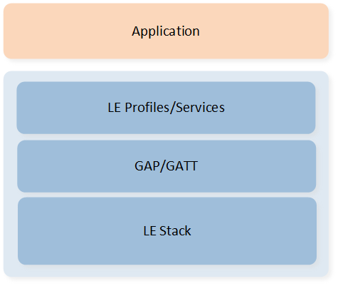
SW Architecture
Terminology and Concepts
The definition of Profile in the Bluetooth specification differs from that of Protocol. Protocol is defined as layer protocols in the Bluetooth specification, such as Link Layer, L2CAP, SMP, and ATT, while the profile involves the implementation of the interoperability of Bluetooth applications, focusing on how to use the layer protocols in the Bluetooth specification. The profile defines features and functions that are available in the protocol, and implementation details for the interaction between devices, enabling the Bluetooth Host to be adapted to APP development in various scenarios.
The relationship between the profile and protocol in the Bluetooth specification is shown in Bluetooth Profiles.
{kind=link}
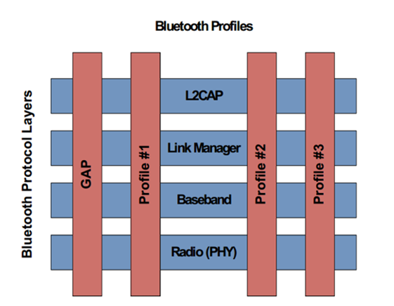
Bluetooth Profiles
The profile is illustrated in a red rectangle, including GAP, Profile #1, Profile #2, Profile #3. Profiles in the Bluetooth specification are classified into two types: GAP-Based Profile (GAP) and GATT-Based Profile (Profile #1, Profile #2, Profile #3).
GAP
The GAP is a fundamental profile that must be implemented by all Bluetooth devices. It is used to describe actions and methods related to device discovery, connection establishment, security requirements, and authentication. For Bluetooth Low Energy, GAP defines four specific roles: Broadcaster, Observer, Peripheral, and Central. A device may support multiple LE GAP roles.
Broadcaster role is applicable to applications that send data only via broadcasting.
Observer role is applicable to applications that receive data via scanning.
Peripheral role is applicable to applications that send data via broadcasting and can establish link connection.
Central role is applicable to applications that receive data via scanning and can establish a single or multiple link connections.
GAP Location
The GAP layer serves as a component module of the Bluetooth protocol stack. As shown in the figure below, the part within the light blue box (GAP, Bluetooth Host, Bluetooth Controller) represents the Bluetooth protocol stack. Application is situated above the Bluetooth protocol stack, while baseband/RF is located below it. The GAP layer provides the application with an interface to access the Bluetooth Host. Application could use GAP to control Bluetooth Host to start an operation such as authentication, create connection and so on. Bluetooth Host could use GAP to notify application on state changes in Bluetooth such as supervision timeout, link disconnected by remote side and so on.

GAP Location in SDK
GATT-Based Profile
In Bluetooth specification, another commonly used profile is GATT-Based Profile. GATT is a standard based on server-client interaction defined in the Bluetooth specification. It is used to provide service data and access to service data. GATT-Based Profile is a standard defined based on server-client interaction to meet various APP scenarios and is used for data interaction between devices as specified. The profile is made up of Service and Characteristic, as shown in GATT-Based Profile Hierarchy :

GATT-Based Profile Hierarchy
Feature Set
Supported Bluetooth Technology Features
The supported Bluetooth technology features are detailed in Table-Supported Bluetooth Core Specification Technology Features of Supported Features.
GAP Capacity
The functions provided by GAP layer are as below:
Advertising: Including functions to set advertising parameters and start/stop advertising.
Scan: Including functions to set scan parameters and start/stop scanning.
Connection: Including functions to set connection parameters, create a connection, terminate an existing connection, and update connection parameters.
Pairing: Including functions to set pairing parameters, trigger the pairing procedure, and input/display a passkey using passkey entry.
Key management: Including functions to find a key entry by device address and address type, save/load keys for bond information, resolve random addresses, and delete keys of bonded devices.
Others:
Set GAP common parameters.
Modify the local Filter Accept List.
Generate/Set a local random address.
Configure the local identity address.
...
Provided APIs
Bluetooth Host API can be divided into GAP APIs and GATT APIs. This figure shows the relationship among Applications, GAP/GATT and Bluetooth Protocol Stack. The part above the horizon line is developed by the APP while the part below the horizon line is developed by Realtek.

GATT GAP APIs Architecture
This chapter gives a simple description of GAP/GATT APIs. For RTL87x2G, GAP/GATT header files which provide GAP/GATT related APIs located in subsys\bluetooth\ directory, while for other ICs(RTL87x2C/RTL87x2D/RTL87x2E/RTL87x2H), the directory for GAP/GATT header files is: inc\bluetooth.
The table below shows the simple description of GAP APIs. For RTL87x2G, GAP files which provide GAP related APIs located in subsys\bluetooth\bt_host\inc directory, while for other ICs(RTL87x2C/RTL87x2D/RTL87x2E/RTL87x2H), the directory for GAP header files is inc\bluetooth\gap.
For a detailed interpretation of the GAP/GATT APIs, please refer to Bluetooth Host.
Header File |
Description |
API Reference |
|---|---|---|
|
Start/Stop legacy advertisement etc. |
|
|
Start/Stop extended advertisement etc. |
|
|
Start/Stop periodic advertisement etc. |
|
|
Start/Stop legacy scan etc. |
|
|
Start/Stop extended scan etc. |
|
|
Set/Get connection parameters, disconnect LE link etc. |
|
|
Save/Load LE key etc. |
|
|
Set/Get bond parameters, display/input bond keys etc. |
|
|
Definite GAP bond manager module APIs. |
|
|
Start/Stop DTM receiver/transmitter test |
|
|
Register callback, read antenna information etc. |
|
|
Start/Stop constant tone extension request procedure etc. |
|
|
Enable/Disable capturing IQ samples etc. |
|
|
Enable/Disable constant tone extensions in periodic advertising. |
|
|
Definite GAP callback messages. |
|
|
Definite GAP messages. |
|
|
Set/Get privacy parameters, enable/disable privacy etc. |
|
|
GAP LE credit based connection exported functions. |
|
|
GAP enhanced credit based flow control mode exported functions. |
|
|
Set/Get GAP general parameters. |
|
|
Initialize/Set/Get LE parameters of GAP etc. |
|
|
Definite types of device appearance, advertising data type, PHY etc. |
The table below shows the simple description of GATT APIs. For RTL87x2G, GATT related APIs are provided in subsys\bluetooth\gatt_profile, while for other ICs(RTL87x2C/RTL87x2D/RTL87x2E/RTL87x2H), the directory for GATT header files is inc\bluetooth\profile.
Header File |
Description |
API Reference |
|---|---|---|
|
Register client callback with conn ID, send read/write request etc. |
|
|
Initialize client parameters, definite discovery procedure etc. |
|
|
Register client callback with conn handle, send read/write request etc. |
|
|
Register server callback with conn ID, send indication/notification etc. |
|
|
Initialize server parameters, register builtin service etc. |
|
|
Register server callback with conn handle, send indication/notification etc. |
Initialization and Configurations
Configurations
Developers shall configure the following items through MP Tool:
Configurable Item |
Description |
Value |
|---|---|---|
LE Master Link Num |
LE Central link number. |
≥ APP_MAX_LINKS |
LE Slave Link Num |
LE Peripheral link number. |
≥ APP_MAX_LINKS |
LE bond device number |
LE maximum bonded device number. |
Developers can configure according to actual needs. |
CCCD count |
Maximum CCCD number. |
Developers can configure according to actual needs. |
Note
APP_MAX_LINKS is the number of links configured by APP.
For more information about MP Tool Configuration, please refer to Generating System Config File in Quick Start.
Initialization
This section introduces GAP internal startup flow and how to configure LE GAP parameters in app_le_gap_init().
GAP Startup Flow
Initialize GAP in
mainint main(void) { ...... le_gap_init(APP_MAX_LINKS); gap_lib_init(); app_le_gap_init(); app_le_profile_init(); ...... }
le_gap_init(): Initialize GAP and set link number.gap_lib_init(): Initializegap_utils.lib.app_le_gap_init: GAP Parameters Initialization.app_le_profile_init: Initialize GATT Profiles.
Start Bluetooth Host in APP task
void app_main_task(void *p_param) { uint8_t event; os_msg_queue_create(&io_queue_handle, "ioQ", MAX_NUMBER_OF_IO_MESSAGE, sizeof(T_IO_MSG)); os_msg_queue_create(&evt_queue_handle, "evtQ", MAX_NUMBER_OF_EVENT_MESSAGE, sizeof(uint8_t)); gap_start_bt_stack(evt_queue_handle, io_queue_handle, MAX_NUMBER_OF_GAP_MESSAGE); ...... }
APP needs to call
gap_start_bt_stack()to start Bluetooth Host and start GAP initialization flow.GAP internal initialization flow
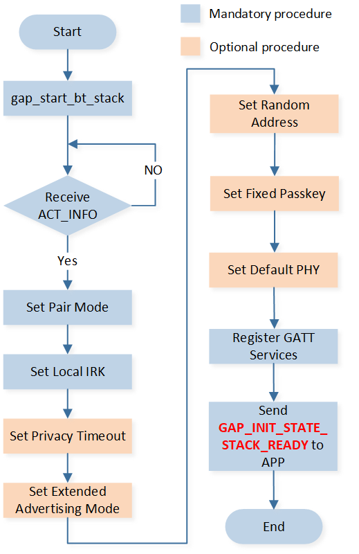
GAP Internal Initialization Flow
Flow chart description:
gap_start_bt_stack(): Makes Bluetooth Host ready by sending the register request.Receive act info: Used by the Bluetooth Host to inform that the stack is ready.
Set pair mode: Mandatory procedure. Set values of
GAP_PARAM_BOND_PAIRING_MODE,GAP_PARAM_BOND_AUTHEN_REQUIREMENTS_FLAGS,GAP_PARAM_BOND_IO_CAPABILITIESandGAP_PARAM_BOND_OOB_ENABLED.Set local IRK: Mandatory procedure. Set IRK. If
GAP_PARAM_BOND_GEN_LOCAL_IRK_AUTOis set to true, GAP will use auto-generated IRK and save the IRK to flash. Otherwise, GAP will use the value ofGAP_PARAM_BOND_SET_LOCAL_IRK, whose default value is all-zero.Set privacy timeout: Optional procedure. If APP calls
le_privacy_set_param()to setGAP_PARAM_PRIVACY_TIMEOUT, GAP layer will set privacy timeout in the initialization flow.Set extended advertising mode: Optional procedure. If APP calls
le_set_gap_param()to setGAP_PARAM_USE_EXTENDED_ADV, GAP layer will configure extended advertising mode in the initialization flow.Set random address: Optional procedure. If APP calls
le_set_gap_param()to setGAP_PARAM_RANDOM_ADDR, GAP layer will set random address in the initialization flow.Set fixed passkey: Optional procedure. Set value for
GAP_PARAM_BOND_FIXED_PASSKEYandGAP_PARAM_BOND_FIXED_PASSKEY_ENABLE.Set default physical: Optional procedure. If APP calls
le_set_gap_param()to setGAP_PARAM_DEFAULT_PHYS_PREFER,GAP_PARAM_DEFAULT_TX_PHYS_PREFERorGAP_PARAM_DEFAULT_RX_PHYS_PREFER, GAP layer will set default physical in the initialization flow.Register GATT services: Mandatory procedure. Register all GATT services to Bluetooth Host.
Send
GAP_INIT_STATE_STACK_READYto APP: GAP initialization flow is completed.
{kind=link}
GAP Parameters Initialization
Take Bluetooth sample projects as an example, GAP parameter initialization is carried out in the main.c file by modifying codes in the function app_le_gap_init().
Configure Device Name and Device Appearance
Parameter types are defined in T_GAP_LE_PARAM_TYPE in gap_le.h.
Device Name Configuration
Device Name Configuration is used to set the value of the Device Name Characteristic in the GAP Service of the device. If the Device Name is also set in the advertising data, then the Device Name set in the advertising data should have the same value as the Device Name Characteristic in the GAP Service. Otherwise, there may be interoperability problems.
/** @brief GAP - Advertisement data (max size = 31 bytes, best kept short to conserve power) */
static const uint8_t adv_data[] =
{
/* Flags */
0x02, /* length */
GAP_ADTYPE_FLAGS, /* type="Flags" */
GAP_ADTYPE_FLAGS_LIMITED | GAP_ADTYPE_FLAGS_BREDR_NOT_SUPPORTED,
/* Service */
0x03, /* length */
GAP_ADTYPE_16BIT_COMPLETE,
LO_WORD(GATT_UUID_SIMPLE_PROFILE),
HI_WORD(GATT_UUID_SIMPLE_PROFILE),
/* Local name */
0x0F, /* length */
GAP_ADTYPE_LOCAL_NAME_COMPLETE,
'B', 'L', 'E', '_', 'P', 'E', 'R', 'I', 'P', 'H', 'E', 'R', 'A', 'L',
};
void app_le_gap_init(void)
{
/* Device name and device appearance */
uint8_t device_name[GAP_DEVICE_NAME_LEN] = "BLE_PERIPHERAL";
......
/* Set device name and device appearance */
le_set_gap_param(GAP_PARAM_DEVICE_NAME, GAP_DEVICE_NAME_LEN, device_name);
......
}
Currently, the maximum length of the Device Name character string that Bluetooth Host supports is 40 bytes (including end mark). If the string exceeds 40 bytes, it will be cut off.
#define GAP_DEVICE_NAME_LEN (39+1) //!< Max length of device name, if device name length exceeds it, it will be truncated.
Device Appearance Configuration
It is used to set the value of the Device Appearance Characteristic in the GAP Service of the device. If the Device Appearance is also set in the advertising data, the Device Appearance set in the advertising data should have the same value as the Device Appearance Characteristic in the GAP Service. Otherwise, there may be an interoperability problem.
Device Appearance is used to describe the type of device, such as a keyboard, mouse, thermometer, blood pressure meter, etc. The available values are defined in gap_le_types.h.
/** @defgroup GAP_LE_APPEARANCE_VALUES GAP Appearance Values
* @{
*/
#define GAP_GATT_APPEARANCE_UNKNOWN 0
#define GAP_GATT_APPEARANCE_GENERIC_PHONE 64
#define GAP_GATT_APPEARANCE_GENERIC_COMPUTER 128
#define GAP_GATT_APPEARANCE_GENERIC_WATCH 192
#define GAP_GATT_APPEARANCE_WATCH_SPORTS_WATCH 193
Sample code is shown as below:
/** @brief GAP - scan response data (max size = 31 bytes) */
static const uint8_t scan_rsp_data[] =
{
0x03, /* length */
GAP_ADTYPE_APPEARANCE, /* type="Appearance" */
LO_WORD(GAP_GATT_APPEARANCE_UNKNOWN),
HI_WORD(GAP_GATT_APPEARANCE_UNKNOWN),
};
void app_le_gap_init(void)
{
/* Device name and device appearance */
uint16_t appearance = GAP_GATT_APPEARANCE_UNKNOWN;
......
/* Set device name and device appearance */
le_set_gap_param(GAP_PARAM_APPEARANCE, sizeof(appearance), &appearance);
......
}
Configure Advertising Parameters
Advertising parameter types are defined in T_GAP_LE_PARAM_TYPE in gap_le.h. Advertising parameters which can be customized are listed below.
void app_le_gap_init(void)
{
/* Advertising parameters */
uint8_t adv_evt_type = GAP_ADTYPE_ADV_IND;
uint8_t adv_direct_type = GAP_REMOTE_ADDR_LE_PUBLIC;
uint8_t adv_direct_addr[GAP_BD_ADDR_LEN] = {0};
uint8_t adv_chann_map = GAP_ADVCHAN_ALL;
uint8_t adv_filter_policy = GAP_ADV_FILTER_ANY;
uint16_t adv_int_min = DEFAULT_ADVERTISING_INTERVAL_MIN;
uint16_t adv_int_max = DEFAULT_ADVERTISING_INTERVAL_MAX;
......
/* Set advertising parameters */
le_adv_set_param(GAP_PARAM_ADV_EVENT_TYPE, sizeof(adv_evt_type), &adv_evt_type);
le_adv_set_param(GAP_PARAM_ADV_DIRECT_ADDR_TYPE, sizeof(adv_direct_type), &adv_direct_type);
le_adv_set_param(GAP_PARAM_ADV_DIRECT_ADDR, sizeof(adv_direct_addr), adv_direct_addr);
le_adv_set_param(GAP_PARAM_ADV_CHANNEL_MAP, sizeof(adv_chann_map), &adv_chann_map);
le_adv_set_param(GAP_PARAM_ADV_FILTER_POLICY, sizeof(adv_filter_policy), &adv_filter_policy);
le_adv_set_param(GAP_PARAM_ADV_INTERVAL_MIN, sizeof(adv_int_min), &adv_int_min);
le_adv_set_param(GAP_PARAM_ADV_INTERVAL_MAX, sizeof(adv_int_max), &adv_int_max);
le_adv_set_param(GAP_PARAM_ADV_DATA, sizeof(adv_data), (void *)adv_data);
le_adv_set_param(GAP_PARAM_SCAN_RSP_DATA, sizeof(scan_rsp_data), (void *)scan_rsp_data);
}
Parameter adv_evt_type defines types of advertising, and different types of advertising need different parameters, as listed in Table-Advertising Parameters Setting .
|
|||||
|---|---|---|---|---|---|
|
Y |
Ignore |
Y |
Y |
Y |
|
Y |
Ignore |
Y |
Y |
Y |
|
Ignore |
Y |
Ignore |
Ignore |
Y |
|
Ignore |
Y |
Ignore |
Ignore |
Y |
|
Y |
Y |
Y |
Y |
Y |
|
Y |
Ignore |
Y |
Y |
Ignore |
Allow Establish Link |
Y |
Y |
N |
N |
Y |
Configure Scan Parameters
Types of scan parameters are defined in T_LE_SCAN_PARAM_TYPE in gap_scan.h.
Scan parameters which can be customized are listed below:
void app_le_gap_init(void)
{
/* Scan parameters */
uint8_t scan_mode = GAP_SCAN_MODE_ACTIVE;
uint16_t scan_interval = DEFAULT_SCAN_INTERVAL;
uint16_t scan_window = DEFAULT_SCAN_WINDOW;
uint8_t scan_filter_policy = GAP_SCAN_FILTER_ANY;
uint8_t scan_filter_duplicate = GAP_SCAN_FILTER_DUPLICATE_ENABLE;
/* Set scan parameters */
le_scan_set_param(GAP_PARAM_SCAN_MODE, sizeof(scan_mode), &scan_mode);
le_scan_set_param(GAP_PARAM_SCAN_INTERVAL, sizeof(scan_interval), &scan_interval);
le_scan_set_param(GAP_PARAM_SCAN_WINDOW, sizeof(scan_window), &scan_window);
le_scan_set_param(GAP_PARAM_SCAN_FILTER_POLICY, sizeof(scan_filter_policy),
&scan_filter_policy);
le_scan_set_param(GAP_PARAM_SCAN_FILTER_DUPLICATES, sizeof(scan_filter_duplicate),
&scan_filter_duplicate);
}
Parameter description:
scan_mode:T_GAP_SCAN_MODE.scan_interval: Scan interval, range: 0x0004~0x4000 (units of 625us).scan_window: Scan window, range: 0x0004~0x4000 (units of 625us).scan_filter_policy:T_GAP_SCAN_FILTER_POLICY.scan_filter_duplicate:T_GAP_SCAN_FILTER_DUPLICATE, determine whether to filter duplicated advertising data. When the parameterscan_filter_policyis set toGAP_SCAN_FILTER_DUPLICATE_ENABLE, the duplicated advertising data will be filtered in the stack and will not be reported to APP.
Configure Bond Manager Parameters
A part of parameter types is defined in T_GAP_PARAM_TYPE in gap.h. The others are defined in T_LE_BOND_PARAM_TYPE in gap_bond_le.h. Bond manager parameters which can be customized are listed below.
void app_le_gap_init(void)
{
/* GAP Bond Manager parameters */
uint8_t auth_pair_mode = GAP_PAIRING_MODE_PAIRABLE;
uint16_t auth_flags = GAP_AUTHEN_BIT_BONDING_FLAG;
uint8_t auth_io_cap = GAP_IO_CAP_NO_INPUT_NO_OUTPUT;
uint8_t auth_oob = false;
uint8_t auth_use_fix_passkey = false;
uint32_t auth_fix_passkey = 0;
uint16_t auth_sec_req_flags = GAP_AUTHEN_BIT_BONDING_FLAG;
......
/* Setup the GAP Bond Manager */
gap_set_param(GAP_PARAM_BOND_PAIRING_MODE, sizeof(auth_pair_mode), &auth_pair_mode);
gap_set_param(GAP_PARAM_BOND_AUTHEN_REQUIREMENTS_FLAGS, sizeof(auth_flags), &auth_flags);
gap_set_param(GAP_PARAM_BOND_IO_CAPABILITIES, sizeof(auth_io_cap), &auth_io_cap);
gap_set_param(GAP_PARAM_BOND_OOB_ENABLED, sizeof(auth_oob), &auth_oob);
le_bond_set_param(GAP_PARAM_BOND_FIXED_PASSKEY, sizeof(auth_fix_passkey), &auth_fix_passkey);
le_bond_set_param(GAP_PARAM_BOND_FIXED_PASSKEY_ENABLE, sizeof(auth_use_fix_passkey),
&auth_use_fix_passkey);
le_bond_set_param(GAP_PARAM_BOND_SEC_REQ_REQUIREMENT, sizeof(auth_sec_req_flags),
&auth_sec_req_flags);
}
Parameter description:
auth_pair_mode: Determine whether the device can be paired in the current status.GAP_PAIRING_MODE_PAIRABLE: The device can be paired.GAP_PAIRING_MODE_NO_PAIRING: The device cannot be paired.
auth_flags: A bit field that indicates the requested security properties.auth_io_cap:T_GAP_IO_CAP, indicates I/O capacity of the device.auth_oob: Indicates whether OOB is enabled.true: Set OOB flag.false: Not set OOB flag.
auth_use_fix_passkey: Indicates whether a random passkey or fixed passkey will be used if pairing mode is passkey entry, and the local device needs to generate a passkey.true: Use fixed passkey.false: Use random passkey.
auth_fix_passkey: The default value for the passkey used during pairing, which is valid whenauth_use_fix_passkeyis true.auth_sec_req_enable: Determines whether to send SMP security request when connected.auth_sec_req_flags: A bit field that indicates the requested security properties.
Configure LE Advertising Extensions Parameters
This section is only applied to devices which use LE Advertising Extensions.
First, the device needs to configure GAP_PARAM_USE_EXTENDED_ADV to use LE Advertising Extensions.
Then the device configures extended advertising related parameters or/and extended scan related parameters according to GAP role of the device. For detailed information, please refer to LE Peripheral Extended ADV and LE Central Extended Scan.
Configure GAP_PARAM_USE_EXTENDED_ADV
To use LE Advertising Extensions, it is necessary to configure GAP_PARAM_USE_EXTENDED_ADV as true.
void app_le_gap_init(void)
{
/* LE Advertising Extensions parameters */
bool use_extended = true;
......
/* Use LE Advertising Extensions */
le_set_gap_param(GAP_PARAM_USE_EXTENDED_ADV, sizeof(use_extended), &use_extended);
......
}
Configure Other Parameters
Configure GAP_PARAM_SLAVE_INIT_GATT_MTU_REQ
void app_le_gap_init(void)
{
uint8_t slave_init_mtu_req = false;
......
le_set_gap_param(GAP_PARAM_SLAVE_INIT_GATT_MTU_REQ, sizeof(slave_init_mtu_req),
&slave_init_mtu_req);
......
}
This parameter is only applicable to the Peripheral role. It determines whether to send an exchange MTU request when connected.
Bluetooth LE Host Features Setting
Configuration of LE Link Number
Due to support of multi-link and requirements of APP, developers can configure LE Central link number and LE Peripheral link number. For more information, please refer to chapter Configurations.
This section takes LE Scatternet project as an example to introduce the configuration of LE link number. Based on the assumption that the ble_scatternet project supports one link as Central role and one link as Peripheral role at the same time, therefore:
LE Central link number shall be no less than 1.
LE Peripheral link number shall be no less than 1.
Configure LE Maximum Bonded Device Number
Devices may need to save bonding information of multiple remote devices.
The default value of LE maximum bonded device numbe is 1. It can be configured by MP Tool or by invoking gap_config_max_le_paired_device() interface. For more information, please refer to chapter Configurations and Parameter Configuration with API.
Initialize LE Link Number in APP
As described in GAP Startup Flow, APP calls le_gap_init() to initialize GAP and set link number. The link number
configured by le_gap_init() shall be less than or equal to the sum of LE Central link number and LE Peripheral link number configured by MP Tool.
void app_ble_gap_param_init(void)
{
......
/*Initialize le link*/
uint8_t supported_max_le_link_num = le_get_max_link_num();
uint8_t link_num = ((MAX_BLE_LINK_NUM <= supported_max_le_link_num) ? MAX_BLE_LINK_NUM :
supported_max_le_link_num);
le_gap_init(link_num);
}
Functions
GAP State
GAP State consists of Advertising State, Scan State, Connection State. If LE Advertising Extensions is enabled, extended advertising state is used. Each state has a corresponding sub-state, and this part will introduce the state machine of each sub-state.
Advertising
Advertising State
The Advertising State has four sub-states, including the idle state, start state, advertising state, and stop state. The advertising sub-state is defined in gap_msg.h.
/* GAP Advertising State */
#define GAP_ADV_STATE_IDLE 0 // Idle, no advertising.
#define GAP_ADV_STATE_START 1 // Start Advertising. A temporary state, haven't received the result.
#define GAP_ADV_STATE_ADVERTISING 2 // Advertising.
#define GAP_ADV_STATE_STOP 3 // Stop Advertising. A temporary state, haven't received the result.
{kind=link}
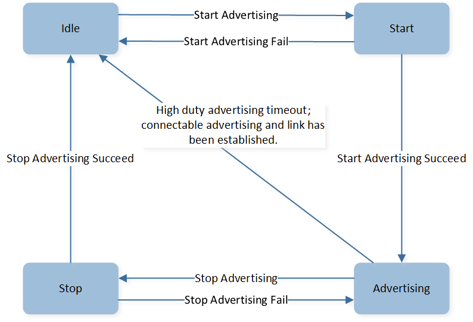
Advertising State Transition Machanism
Idle state
No advertising, the default state.
Start state
Advertising starts from the idle state, but the process of enabling advertising has not been completed yet. The start state is a temporary state. If advertising starts successfully, the Advertising State will transition to the advertising state. Otherwise, it will transition to the idle state.
Advertising state
Advertising has started successfully. In this state, the device is sending advertising packets. The Advertising State would transfer from advertising state to idle state when the advertising is high duty cycle directed and the high duty cycle directed advertising times out, or when the advertising is connectable and the link once been established.
Stop state
Advertising stops from the advertising state, but the process of disabling advertising has not been completed yet. The stop state is a temporary state. If advertising stops successfully, then the Advertising State will transition to the idle state. Otherwise, the Advertising State will transition back to the advertising state.
Scan
Scan State
Scan State has four sub-states including idle state, start state, scanning state and stop state. Scan sub-state is defined in gap_msg.h.
/* GAP Scan State \*/
#define GAP_SCAN_STATE_IDLE 0 //Idle, no scanning.
#define GAP_SCAN_STATE_START 1 //Start scanning. A temporary state, haven't received the result.
#define GAP_SCAN_STATE_SCANNING 2 //Scanning.
#define GAP_SCAN_STATE_STOP 3 //Stop scanning, A temporary state, haven't received the result.
{kind=link}
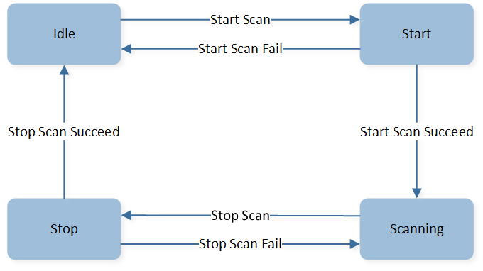
Scan State Transition Machanism
{kind=link}
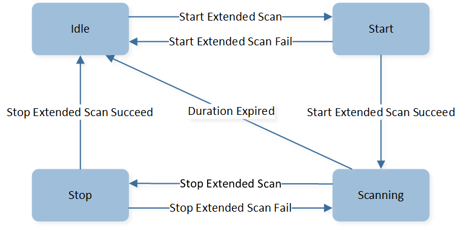
Scan State Transition Machanism with Extended Scan
Idle state
No scanning, the default state.
Start state
Scan starts in the idle state, but the process of enabling scan has not been completed yet. The start state is a temporary state. If scanning starts successfully, then the Scan State will change to the scanning state. Otherwise, the Scan State will revert back to the idle state.
Scanning state
Scan is in progress. In this state, the device is scanning advertising packets. If the extended scan is used and the Duration parameter is non-zero and the Period parameter is zero, then the Scan State will transition to the idle state once the duration expires.
Stop state
Stop scanning in the scanning state, but the process of disabling scan has not been completed yet. The stop state is a temporary state. If scanning stops successfully, then the Scan State will change to the idle state. Otherwise, the Scan State will revert back to the scanning state.
Connection
Connection State
Due to supporting multi-link, the link could be connected or disconnected when the GAP Connection State is in the idle state, so the transition of Connection State needs to be combined with GAP Connection State and Link State.
GAP Connection State has two sub-states including idle state and connecting state, it is applicable only to Central roles. GAP Connection State is defined in gap_msg.h.
#define GAP_CONN_DEV_STATE_IDLE 0 //!< Idle.
#define GAP_CONN_DEV_STATE_INITIATING 1 //!< Initiating Connection.
Note
For Central roles, GAP can only create one link at the same time, which means the APP cannot create another link when the GAP Connection State is in the connecting state.
Link State has four sub-states including disconnected state, connecting state, connected state and disconnecting state, it is applicable to both Central and Peripheral roles. Link sub-states are defined in gap_msg.h.
/* Link Connection State \*/
typedef enum{
GAP_CONN_STATE_DISCONNECTED, // Disconnected.
GAP_CONN_STATE_CONNECTING, // Connecting.
GAP_CONN_STATE_CONNECTED, // Connected.
GAP_CONN_STATE_DISCONNECTING // Disconnecting.
}T_GAP_CONN_STATE;
Connection state transition is different from actively creating a connection as a Central role and passively receiving a connection indication as a Peripheral role. This section will describe these two cases separately.
Central-role Active State Change

Active State Transition Machanism
Idle | Disconnected state
GAP Connection State is in the idle state, Link State is disconnected and connection hasn't been established.
Connecting | Connecting state
Central creates a connection, and the process hasn't been completed yet. It is a temporary state. GAP Connection State changes to connecting state, and Link State turns to connecting state. If connection is successfully established, Link State will turn to connected state, and GAP Connection State will turn to idle state again. If it fails to create a connection, Link State will turn back to disconnected state, and GAP Connection State will turn back to the idle state. In this state, Central can also disconnect the link, if so, Link State will change to the disconnecting state and the GAP Connection State will turn to the idle state.
Idle | Connected state
A connection has been created. GAP Connection State is in idle state and Link State is in connected state.
Idle | Disconnecting state
Central terminates the link, and the process hasn't been completed yet, and it is a temporary state. GAP Connection State is in the idle state and Link State is in the disconnecting state. If the developer terminates the link successfully, Link State will change to the disconnected state.
Peripheral-role Passive State Change

Passive State Transition Machanism
Peripheral accept connection
When Peripheral receives the connect indication, GAP Advertising State will change to idle state from advertising state and Link State will change to connecting state from disconnected state, after the process of creating connection has been completed, Link State turns into connected state.
Disconnect by peer
When the peer device disconnects the link, the local device's Link State will change to the disconnected state.
Extended Advertising
Extended Advertising State
Without LE Advertising Extensions, the device that use the Advertising State can be considered as having one simplified advertising set. This section is only applied to devices that use LE Advertising Extensions.
Due to the support of LE Advertising Extensions, the device may enable or disable one or more advertising sets at a time,
so the change of the Extended Advertising State has to be combined with the advertising set. Extended Advertising State has four sub-states including idle state,
start state, advertising state and stop state. Extended Advertising sub-state is defined in gap_ext_adv.h.
/** @brief GAP extended advertising state. */
typedef enum
{
EXT_ADV_STATE_IDLE, /**< Idle, no advertising. */
EXT_ADV_STATE_START, /**< Start Advertising. A temporary state, haven't received the result. */
EXT_ADV_STATE_ADVERTISING, /**< Advertising. */
EXT_ADV_STATE_STOP /**< Stop Advertising. A temporary state, haven't received the result. */
}T_GAP_EXT_ADV_STATE;

Extended Advertising State Transition Machanism for One Advertising Set
Idle state
No advertising, the default state.
Start state
Extended advertising starts in the idle state, but the process of enabling extended advertising has not completed yet. It is a temporary state. If extended advertising successfully starts, the Extended Advertising State will transition to the advertising state; Otherwise, the Extended Advertising State will transition back to the idle state.
Advertising state
Extended advertising has started successfully. In this state, the device is sending advertising packets. If the Duration is non-zero, the Extended Advertising State will transition to the idle state once the duration has expired. If the maximum number of extended advertising events is non-zero, the Extended Advertising State will transition to the idle state once the maximum number has been reached. If the extended advertising is connectable, the Extended Advertising State will transition to the idle state once the link has been established.
Stop state
Extended advertising is stopped in the advertising state, but the process of disabling extended advertising has not been completed yet. It is a temporary state. If extended advertising successfully stops, the Extended Advertising State will transition to the idle state; Otherwise, the Extended Advertising State will transition back to the advertising state.
GAP Message
GAP messages include Bluetooth status messages and GAP API messages. Bluetooth status messages are used to notify the APP about various information, including device state transitions, connection state transitions, bond state transitions, etc. GAP API messages are used to notify the APP about the execution status of a function after the API has been invoked. Each API has an associated message. For more information about GAP messages, please refer to chapter Bluetooth LE GAP Message and Bluetooth LE GAP Callback.
Bluetooth LE GAP Message
Overview
This chapter describes the LE GAP Message Module. The GAP message type definitions and message data structures are defined in gap_msg.h. GAP messages can be divided into four types:
/** @defgroup GAP_MSG_TYPE GAP Bluetooth Message Type Definitions
* @brief Define the subtype of Message IO_MSG_TYPE_BT_STATUS.
* @{
*/
#define GAP_MSG_LE_DEV_STATE_CHANGE 0x01 //!< Device state change msg type.
#define GAP_MSG_LE_CONN_STATE_CHANGE 0x02 //!< Connection state change msg type.
#define GAP_MSG_LE_CONN_PARAM_UPDATE 0x03 //!< Connection parameter update changed msg type.
#define GAP_MSG_LE_CONN_MTU_INFO 0x04 //!< Connection MTU size info msg type.
#define GAP_MSG_LE_AUTHEN_STATE_CHANGE 0x05 //!< Authentication state change msg type.
#define GAP_MSG_LE_BOND_PASSKEY_DISPLAY 0x06 //!< Bond passkey display msg type.
#define GAP_MSG_LE_BOND_PASSKEY_INPUT 0x07 //!< Bond passkey input msg type.
#define GAP_MSG_LE_BOND_OOB_INPUT 0x08 //!< Bond passkey oob input msg type.
#define GAP_MSG_LE_BOND_USER_CONFIRMATION 0x09 //!< Bond user confirmation msg type.
#define GAP_MSG_LE_BOND_JUST_WORK 0x0A //!< Bond user confirmation msg type.
#define GAP_MSG_LE_EXT_ADV_STATE_CHANGE 0x0B //!< Extended advertising state change msg type.
Bluetooth LE GAP Message process flow is as below:
APP can call
gap_start_bt_stack()to initialize the LE GAP message module. The initialization codes are given below:void app_main_task(void *p_param) { uint8_t event; os_msg_queue_create(&io_queue_handle, "ioQ", MAX_NUMBER_OF_IO_MESSAGE, sizeof(T_IO_MSG)); os_msg_queue_create(&evt_queue_handle, "evtQ", MAX_NUMBER_OF_EVENT_MESSAGE, sizeof(uint8_t)); gap_start_bt_stack(evt_queue_handle, io_queue_handle, MAX_NUMBER_OF_GAP_MESSAGE); ...... }
GAP layer sends the GAP message to
io_queue_handle. APP task receives the GAP messages and callsapp_handle_io_msgto handle (event:EVENT_IO_TO_APP, type:IO_MSG_TYPE_BT_STATUS).void app_main_task(void *p_param) { ...... while (true) { if (os_msg_recv(evt_queue_handle, &event, 0xFFFFFFFF) == true) { if (event == EVENT_IO_TO_APP) { T_IO_MSG io_msg; if (os_msg_recv(io_queue_handle, &io_msg, 0) == true) { app_handle_io_msg(io_msg); } } ...... } ......
The GAP messages handler function is given below:
void app_handle_io_msg(T_IO_MSG io_msg) { uint16_t msg_type = io_msg.type; switch (msg_type) { case IO_MSG_TYPE_BT_STATUS: { app_handle_gap_msg(&io_msg); } break; default: break; } } void app_handle_gap_msg(T_IO_MSG *p_gap_msg) { T_LE_GAP_MSG gap_msg; uint8_t conn_id; memcpy(&gap_msg, &p_gap_msg->u.param, sizeof(p_gap_msg->u.param)); APP_PRINT_TRACE1("app_handle_gap_msg: subtype %d", p_gap_msg->subtype); switch (p_gap_msg->subtype) { case GAP_MSG_LE_DEV_STATE_CHANGE: { app_handle_dev_state_evt(gap_msg.msg_data.gap_dev_state_change.new_state, gap_msg.msg_data.gap_dev_state_change.cause); } break; ...... }
Device State Message
GAP_MSG_LE_DEV_STATE_CHANGE
This message is used to inform GAP Device State (T_GAP_DEV_STATE), GAP device state contains five sub-states.
gap_init_state: GAP Initial State.gap_adv_state: GAP Advertising State.gap_adv_sub_state: GAP Advertising Sub State (this state is only applicable to the situation wheregap_adv_stateisGAP_ADV_STATE_IDLE).gap_scan_state: GAP Scan State.gap_conn_state: GAP Connection State.
Message data structure is T_GAP_DEV_STATE_CHANGE.
/** @brief Device State.*/
typedef struct
{
uint8_t gap_init_state: 1; //!< @ref GAP_INIT_STATE
uint8_t gap_adv_sub_state: 1; //!< @ref GAP_ADV_SUB_STATE
uint8_t gap_adv_state: 2; //!< @ref GAP_ADV_STATE
uint8_t gap_scan_state: 2; //!< @ref GAP_SCAN_STATE
uint8_t gap_conn_state: 2; //!< @ref GAP_CONN_STATE
} T_GAP_DEV_STATE;
/** @brief The msg_data of GAP_MSG_LE_DEV_STATE_CHANGE.*/
typedef struct
{
T_GAP_DEV_STATE new_state;
uint16_t cause;
} T_GAP_DEV_STATE_CHANGE;
When the parameter gap_init_state of the message GAP_MSG_LE_DEV_STATE_CHANGE is GAP_INIT_STATE_STACK_READY, it indicates that the Bluetooth Host is ready. The sample code is given as below:
void app_handle_dev_state_evt(T_GAP_DEV_STATE new_state, uint16_t cause)
{
APP_PRINT_INFO4("app_handle_dev_state_evt: init state %d, adv state %d, scan state %d, cause 0x%x",
new_state.gap_init_state, new_state.gap_adv_state, new_state.gap_scan_state, cause);
if (gap_dev_state.gap_init_state != new_state.gap_init_state)
{
if (new_state.gap_init_state == GAP_INIT_STATE_STACK_READY)
{
APP_PRINT_INFO0("GAP stack ready");
}
}
if (gap_dev_state.gap_scan_state != new_state.gap_scan_state)
{
if (new_state.gap_scan_state == GAP_SCAN_STATE_IDLE)
{
APP_PRINT_INFO0("GAP scan stop");
}
else if(new_state.gap_scan_state == GAP_SCAN_STATE_SCANNING)
{
APP_PRINT_INFO0("GAP scan start");
}
}
if (gap_dev_state.gap_adv_state != new_state.gap_adv_state)
{
if (new_state.gap_adv_state == GAP_ADV_STATE_IDLE)
{
if (new_state.gap_adv_sub_state == GAP_ADV_TO_IDLE_CAUSE_CONN)
{
APP_PRINT_INFO0("GAP adv stoped: because connection created");
}
else
{
APP_PRINT_INFO0("GAP adv stoped");
}
}
else if (new_state.gap_adv_state == GAP_ADV_STATE_ADVERTISING)
{
APP_PRINT_INFO0("GAP adv start");
}
}
gap_dev_state = new_state;
}
Extended Advertising State Message
GAP_MSG_LE_EXT_ADV_STATE_CHANGE
This message is used to inform extended advertising state ( T_GAP_EXT_ADV_STATE ).
Message data structure is T_GAP_EXT_ADV_STATE_CHANGE. The sample codes are given as below:
void app_handle_ext_adv_state_evt(uint8_t adv_handle, T_GAP_EXT_ADV_STATE new_state, uint16_t cause)
{
for (int i = 0; i < APP_MAX_ADV_SET; i++)
{
if (ext_adv_state[i].adv_handle == adv_handle)
{
APP_PRINT_INFO2("app_handle_ext_adv_state_evt: adv_handle = %d oldState = %d",
ext_adv_state[i].adv_handle, ext_adv_state[i].ext_adv_state);
ext_adv_state[i].ext_adv_state = new_state;
break;
}
}
APP_PRINT_INFO2("app_handle_ext_adv_state_evt: adv_handle = %d newState = %d",
adv_handle, new_state);
switch (new_state)
{
/* device is idle */
case EXT_ADV_STATE_IDLE:
{
APP_PRINT_INFO2("EXT_ADV_STATE_IDLE: adv_handle %d, cause 0x%x", adv_handle, cause);
}
break;
/* device is advertising */
case EXT_ADV_STATE_ADVERTISING:
{
APP_PRINT_INFO2("EXT_ADV_STATE_ADVERTISING: adv_handle %d, cause 0x%x", adv_handle, cause);
}
break;
default:
break;
}
}
Bluetooth LE GAP Callback
This section introduces the LE GAP callback. This registered callback function is used by LE GAP Layer to send messages to APP.
LE GAP callback messages are defined in gap_callback_le.h. For detailed information about each function-related message, please refer to the API comments.
Unlike the Bluetooth LE GAP message, the callback function is called directly on the GAP layer. Therefore, it is not recommended to perform any time-consuming operation in the APP callback function. Any time-consuming operation will cause the underlying process to wait and be suspended, which may result in exceptions in some cases. If the APP does need to perform a time-consuming operation immediately after receiving a message from the GAP Layer, it is recommended to send this message to the event queue in the APP through the APP callback function before handling it. In such cases, the APP Callback function should terminate after sending the message to the queue, so that the operation does not keep the underlying process waiting.
Partial commonly used message definitions are as follows:
/* GAP API message */
//gap_le.h
#define GAP_MSG_LE_MODIFY_WHITE_LIST 0x01 //!<Response msg type for le_modify_white_list
#define GAP_MSG_LE_SET_RAND_ADDR 0x02 //!<Response msg type for le_set_rand_addr
#define GAP_MSG_LE_SET_HOST_CHANN_CLASSIF 0x03 //!<Response msg type for le_set_host_chann_classif
#define GAP_MSG_LE_WRITE_DEFAULT_DATA_LEN 0x04 //!<Response msg type for le_write_default_data_len
//gap_conn_le.h
#define GAP_MSG_LE_READ_RSSI 0x10 //!<Response msg type for le_read_rssi
#define GAP_MSG_LE_READ_CHANN_MAP 0x11 //!<Response msg type for le_read_chann_map
#define GAP_MSG_LE_DISABLE_SLAVE_LATENCY 0x12 //!<Response msg type for le_disable_slave_latency
#define GAP_MSG_LE_SET_DATA_LEN 0x13 //!<Response msg type for le_set_data_len
#define GAP_MSG_LE_DATA_LEN_CHANGE_INFO 0x14 //!<Notification msg type for data length changed
#define GAP_MSG_LE_CONN_UPDATE_IND 0x15 //!<Indication for le connection parameter update
#define GAP_MSG_LE_CREATE_CONN_IND 0x16 //!<Indication for create le connection
#define GAP_MSG_LE_PHY_UPDATE_INFO 0x17 //!<Information for LE PHY update
#define GAP_MSG_LE_UPDATE_PASSED_CHANN_MAP 0x18 //!<Response msg type for le_update_passed_chann_map
#define GAP_MSG_LE_REMOTE_FEATS_INFO 0x19 //!<Information for remote device supported features
#define GAP_MSG_LE_SET_CONN_TX_PWR 0x1A //!<Response msg type for le_set_conn_tx_power
#define GAP_MSG_LE_READ_REMOTE_VERSION 0x1B //!<Response msg type for le_read_remote_version
#define GAP_MSG_LE_ADV_SET_CONN_OWN_ADDR_TYPE_INFO 0x1C //!<Information of own address type for advertiser using adv set
//gap_bond_le.h
#define GAP_MSG_LE_BOND_MODIFY_INFO 0x20 //!<Notification msg type for bond modify
#define GAP_MSG_LE_KEYPRESS_NOTIFY 0x21 //!<Response msg type for le_bond_keypress_notify
#define GAP_MSG_LE_KEYPRESS_NOTIFY_INFO 0x22 //!<Notification msg type for le_bond_keypress_notify
#define GAP_MSG_LE_GATT_SIGNED_STATUS_INFO 0x23 //!<Notification msg type for le signed status information
/* The type of callback will only be used when gap_param_key_manager equals 2 and no matching key entry is found*/
#define GAP_MSG_LE_BOND_KEY_REQ 0x24 //!<Notification msg type for le bond key request information
//gap_scan.h
#define GAP_MSG_LE_SCAN_INFO 0x30 //!<Notification msg type for le scan
#define GAP_MSG_LE_DIRECT_ADV_INFO 0x31 //!<Notification msg type for le direct adv info
//gap_adv.h
#define GAP_MSG_LE_ADV_UPDATE_PARAM 0x40 //!<Response msg type for le_adv_update_param
#define GAP_MSG_LE_ADV_READ_TX_POWER 0x41 //!<Response msg type for le_adv_read_tx_power
#define GAP_MSG_LE_ADV_SET_TX_POWER 0x42 //!<Response msg type for le_adv_set_tx_power
//gap_ext_scan.h
#define GAP_MSG_LE_EXT_ADV_REPORT_INFO 0x50 //!<Notification msg type for le extended adv report
/* The type of callback will only be used after APP calls @ref le_ext_scan_gap_msg_info_way(false). */
#define GAP_MSG_LE_EXT_SCAN_STATE_CHANGE_INFO 0x51 //!<Notification msg type for extended scanning state
//gap_ext_adv.h
#define GAP_MSG_LE_EXT_ADV_START_SETTING 0x60 //!<Response msg type for le_ext_adv_start_setting
#define GAP_MSG_LE_EXT_ADV_REMOVE_SET 0x61 //!<Response msg type for le_ext_adv_remove_set
#define GAP_MSG_LE_EXT_ADV_CLEAR_SET 0x62 //!<Response msg type for le_ext_adv_clear_set
#define GAP_MSG_LE_EXT_ADV_ENABLE 0x63 //!<Response msg type for le_ext_adv_enable
#define GAP_MSG_LE_EXT_ADV_DISABLE 0x64 //!<Response msg type for le_ext_adv_disable
#define GAP_MSG_LE_SCAN_REQ_RECEIVED_INFO 0x65 //!<Notification msg type for le scan received info
/* The type of callback will only be used after APP calls @ref le_ext_adv_gap_msg_info_way(false). */
#define GAP_MSG_LE_EXT_ADV_STATE_CHANGE_INFO 0x66 //!<Notification msg type for extended advertising state
#define GAP_MSG_LE_GAP_STATE_MSG 0xB0
#define GAP_MSG_LE_CONN_INFO 0xD2 //!<Msg type for LE connection
The usage of LE GAP Callback in APP consists of the following steps:
Register the callback function
void app_le_gap_init(void) { ...... le_register_app_cb(app_gap_callback); }
Handle the GAP callback messages
T_APP_RESULT app_gap_callback(uint8_t cb_type, void *p_cb_data) { T_APP_RESULT result = APP_RESULT_SUCCESS; T_LE_CB_DATA *p_data = (T_LE_CB_DATA *)p_cb_data; switch (cb_type) { case GAP_MSG_LE_DATA_LEN_CHANGE_INFO: APP_PRINT_INFO3("GAP_MSG_LE_DATA_LEN_CHANGE_INFO: conn_id %d, tx octets 0x%x, max_tx_time 0x%x", p_data->p_le_data_len_change_info->conn_id, p_data->p_le_data_len_change_info->max_tx_octets, p_data->p_le_data_len_change_info->max_tx_time); break; ...... } }
LE GAP Callback Message Overview
This section introduces GAP callback messages. GAP callback message type and message data are defined in gap_callback_le.h.
Most of the interfaces provided by the GAP Layer are asynchronous, meaning that the GAP Layer uses the callback function to send a response.
For example, when the APP calls le_read_rssi() to read the RSSI and the return value is GAP_CAUSE_SUCCESS, this indicates
that the request was sent successfully. The APP then needs to wait for the GAP_MSG_LE_READ_RSSI message to receive the result.
Note
All Reference API provided in this chapter shall be called after the Bluetooth Host is ready.
void app_handle_dev_state_evt(T_GAP_DEV_STATE new_state, uint16_t cause)
{
APP_PRINT_INFO3("app_handle_dev_state_evt: init state %d, adv state %d, cause 0x%x",
new_state.gap_init_state, new_state.gap_adv_state, cause);
if (gap_dev_state.gap_init_state != new_state.gap_init_state)
{
if (new_state.gap_init_state == GAP_INIT_STATE_STACK_READY)
{
// GAP_INIT_STATE_STACK_READY means Bluetooth Host ready. All Reference API provided in this chapter shall be called after the Bluetooth Host is ready.
}
}
gap_dev_state = new_state;
}
Detailed LE GAP message information is listed below.
gap_le.hRelated Messagesgap_le.h Related Messages Callback type (
cb_type)Callback data (
p_cb_data)Reference API
T_LE_MODIFY_WHITE_LIST_RSP *p_le_modify_white_list_rspT_LE_SET_RAND_ADDR_RSP *p_le_set_rand_addr_rspT_LE_SET_HOST_CHANN_CLASSIF_RSP *p_le_set_host_chann_classif_rspT_LE_CAUSE le_causegap_conn_le.hRelated Messagesgap_conn_le.h Related Messages Callback Type (
cb_type)Callback Data (
p_cb_data)Reference API
T_LE_READ_RSSI_RSP *p_le_read_rssi_rspT_LE_READ_CHANN_MAP_RSP *p_le_read_chann_map_rspT_LE_DISABLE_SLAVE_LATENCY_RSP *p_le_disable_slave_latency_rspT_LE_SET_DATA_LEN_RSP *p_le_set_data_len_rspT_LE_DATA_LEN_CHANGE_INFO *p_le_data_len_change_infoT_LE_CONN_UPDATE_IND *p_le_conn_update_indT_LE_CREATE_CONN_IND *p_le_create_conn_indT_LE_PHY_UPDATE_INFO *p_le_phy_update_infoT_LE_UPDATE_PASSED_CHANN_MAP_RSP *p_le_update_passed_chann_map_rspT_LE_REMOTE_FEATS_INFO *p_le_remote_feats_infoT_LE_CAUSE le_causeGAP_MSG_LE_DATA_LEN_CHANGE_INFO: This message notifies the APP of a change to either the maximum payload length or the maximum transmission time of packets in either direction in the Link Layer.GAP_MSG_LE_CONN_UPDATE_IND: This message is only applicable to the Central role. When the remote Bluetooth device requests a connection parameter update, the GAP Layer will send this message through the callback function and check the return value. The APP can then returnAPP_RESULT_ACCEPTto accept the parameter or returnAPP_RESULT_REJECTto reject it.
T_APP_RESULT app_gap_callback(uint8_t cb_type, void *p_cb_data) { ...... case GAP_MSG_LE_CONN_UPDATE_IND: APP_PRINT_INFO5("GAP_MSG_LE_CONN_UPDATE_IND: conn_id %d, conn_interval_max 0x%x, conn_interval_min 0x%x, conn_latency 0x%x,supervision_timeout 0x%x", p_data->p_le_conn_update_ind->conn_id, p_data->p_le_conn_update_ind->conn_interval_max, p_data->p_le_conn_update_ind->conn_interval_min, p_data->p_le_conn_update_ind->conn_latency, p_data->p_le_conn_update_ind->supervision_timeout); /* if reject the proposed connection parameter from peer device, use APP_RESULT_REJECT. */ result = APP_RESULT_ACCEPT; break; }
GAP_MSG_LE_CREATE_CONN_IND: This message is only applicable to the Peripheral role. It is used by the APP to decide whether to establish a connection. When a remote Central device initiates a connection, the GAP Layer does not send this message by default and accepts the connection. If the APP wants to enable this function, theGAP_PARAM_HANDLE_CREATE_CONN_INDmust be set totrue. The sample code is given below:
T_APP_RESULT app_gap_callback(uint8_t cb_type, void *p_cb_data) { ...... uint8_t handle_conn_ind = true; le_set_gap_param(GAP_PARAM_HANDLE_CREATE_CONN_IND, sizeof(handle_conn_ind), &handle_conn_ind); } T_APP_RESULT app_gap_callback(uint8_t cb_type, void *p_cb_data) { ...... case GAP_MSG_LE_CREATE_CONN_IND: /* if reject the connection from peer device, use APP_RESULT_REJECT. */ result = APP_RESULT_ACCEPT; break; }
GAP_MSG_LE_PHY_UPDATE_INFO: It is used to indicate that the Controller has switched the transmitter PHY or receiver PHY in use.GAP_MSG_LE_REMOTE_FEATS_INFO: This message is used to indicate the completion of the process in which the Controller obtains the features used on the connection and the features supported by the remote Bluetooth device.
gap_bond_le.hRelated Messagesgap_bond_le.h Related Messages Callback Type (
cb_type)Callback Data (
p_cb_data)Reference API
T_LE_BOND_MODIFY_INFO *p_le_bond_modify_infoT_LE_KEYPRESS_NOTIFY_RSP *p_le_keypress_notify_rspT_LE_KEYPRESS_NOTIFY_INFO *p_le_keypress_notify_infoT_LE_GATT_SIGNED_STATUS_INFO *p_le_gatt_signed_status_infoGAP_MSG_LE_KEYPRESS_NOTIFY_INFO: This message indicates that the SMP Layer has received the keypress notification.GAP_MSG_LE_GATT_SIGNED_STATUS_INFO: This message denotes GATT signed status information.GAP_MSG_LE_BOND_MODIFY_INFO: This message is used to notify the APP that the bond information has been modified. For detailed information, please refer to LE Key Manager.
gap_scan.hRelated Messagesgap_scan.h Related Messages Callback Type (
cb_type)Callback Data (
p_cb_data)Reference API
T_LE_SCAN_INFO *p_le_scan_infoT_LE_DIRECT_ADV_INFO *p_le_direct_adv_infoGAP_MSG_LE_SCAN_INFO: Scan state isGAP_SCAN_STATE_SCANNING. When the Bluetooth Host receives advertising data or scan response data, the GAP Layer will use this message to inform the APP.GAP_MSG_LE_DIRECT_ADV_INFO: Scan state isGAP_SCAN_STATE_SCANNING, and the scan filter policy isGAP_SCAN_FILTER_ANY_RPAorGAP_SCAN_FILTER_WHITE_LIST_RPA. When the Bluetooth Host receives directed advertising packets and the initiator's address is a RPA but cannot be resolved, the GAP Layer will send this message to the APP.
gap_adv.hRelated Messagesgap_adv.h Related Messages Callback Type (
cb_type)Callback Data (
p_cb_data)Reference API
T_LE_ADV_UPDATE_PARAM_RSP *p_le_adv_update_param_rspT_LE_ADV_READ_TX_POWER_RSP *p_le_adv_read_tx_power_rspT_LE_CAUSE le_causeT_LE_CAUSE le_causegap_dtm.hRelated Messagesgap_dtm.h Related Messages Callback Type (
cb_type)Callback Data (
p_cb_data)Reference API
T_LE_CAUSE le_causeT_LE_CAUSE le_causeT_LE_DTM_TEST_END_RSP *p_le_dtm_test_end_rspT_LE_CAUSE le_causeT_LE_CAUSE le_causeT_LE_CAUSE le_causeT_LE_CAUSE le_causeT_LE_CAUSE le_causegap_ext_scan.hRelated Messagesgap_ext_scan.h Related Messages Callback Type (
cb_type)Callback Data (
p_cb_data)Reference API
T_LE_EXT_ADV_REPORT_INFO *p_le_ext_adv_report_infoGAP_MSG_LE_EXT_ADV_REPORT_INFO: Using LE Advertising Extensions, the scan state isGAP_SCAN_STATE_SCANNING. When the Bluetooth Host receives advertising data or scan response data, the GAP Layer will use this message to inform the APP.
gap_ext_adv.hRelated Messagesgap_ext_adv.h Related Messages Callback Type (
cb_type)Callback Data (
p_cb_data)Reference API
T_LE_EXT_ADV_START_SETTING_RSP *p_le_ext_adv_start_setting_rspT_LE_EXT_ADV_REMOVE_SET_RSP *p_le_ext_adv_remove_set_rspT_LE_EXT_ADV_CLEAR_SET_RSP *p_le_ext_adv_clear_set_rspT_LE_CAUSE le_causeT_LE_CAUSE le_causeGAP_MSG_LE_EXT_ADV_START_SETTING: This message is used to indicate the completion of the process that the local device sets extended advertising related parameters for an advertising set.GAP_MSG_LE_EXT_ADV_REMOVE_SET: This message is used to indicate the completion of the process that the local device removes an advertising set.-
This message is used to indicate the completion of the process by which the local device removes all existing advertising sets.
-
This message is used to indicate the completion of the process by which the local device enables extended advertising for one or more advertising sets.
-
This message is used to indicate the completion of the process by which the local device disables extended advertising for one or more advertising sets.
GAP_MSG_LE_SCAN_REQ_RECEIVED_INFO:Extended advertising state is
EXT_ADV_STATE_ADVERTISING, and scan request notifications are enabled by callingle_ext_adv_set_adv_param(). When the Bluetooth Host receives a scan request, the GAP Layer will use this message to inform the APP.
gap_vendor.hRelated Messagesgap_vendor.h Related Messages Callback Type (
cb_type)Callback Data (
p_cb_data)Reference API
T_GAP_VENDOR_CMD_RSP *p_gap_vendor_cmd_rsp
APP Message Flow
APP message flow is shown below:

APP Message Flow
Two methods of sending messages to APP
Callback function
In this method, the APP should first register a callback function. When an upstream message is sent to the GAP layer, the GAP layer will call this callback function to handle the message.
Message queue
In this method, the APP should first create a message queue. When an upstream message is sent to the GAP layer, the GAP layer will send the message into the queue from which the APP loops to receive the message.
Initialization
Register callback function
To receive GAP API messages, the APP should register the APP callback function by invoking the
le_register_app_cb()function.To receive GAP common messages, the APP should register the APP callback function by invoking the
gap_register_app_cb()function.To receive GAPS characteristic write messages, the APP should register the APP callback function by invoking the
gatt_register_callback()function.If APP contains services, for receiving server messages, the APP should register the service callback function through the
xxx_add_servicefunction and theserver_register_app_cb()function.If APP contains clients, for receiving client messages, the APP should register the client callback function through the
xxx_add_clientfunction.
Create message queue
For receiving Bluetooth status messages, the APP shall create an IO message queue through the
gap_start_bt_stack()function.Loop to receive message
The APP's main task loops to receive messages. If the received message is an IO message, the APP calls the
app_handle_io_msg()function to handle this message in the APP layer. Otherwise, the APP invokes thegap_handle_msg()function to handle this message in the GAP layer.Handle message
If the message is sent by a callback function, the function registered in the initialization procedure should handle this message. If the message is sent by the message queue, the message should be handled by another function.
GAP Information Storage
The constants and function prototypes are defined in gap_storage_le.h. Local stack and bond information are saved in FTL. More information on the FTL can be found in FTL Introduction.
FTL Introduction
Bluetooth Host and developer's APP use FTL as an abstraction layer to save/load data in flash.
FTL Layout
for RTL87x2E/RTL87x2D/RTL87x2C, LE FTL layout is shown in LE FTL Layout 1.

LE FTL Layout 1
For RTL87x2G/RTL87x2H, LE FTL layout is shown in LE FTL Layout 2.

LE FTL Layout 2
FTL can be divided into these regions:
Local Bluetooth Host information storage space
range: 0x0000 - 0x004F
This region is used to store local Bluetooth Host information including device name, device appearance and local IRK. For more information, please refer to Local Bluetooth Host Information Storage.
Legacy key storage space
range: 0x50- (
le_start_offset- 1)This region is used to store legacy key information.
le_start_offsetis a variable value:le_start_offset = 0x50 + 20 + max_legacy_paired_device * 28.max_legacy_paired_device: This parameter is used to configure the legacy maximum bonded device number and the value is 0 because RTL87x2G is LE only.
LE key storage space
range: 0x0050~(
Offset_reserved-1)This region is used to store LE key information. For more information, please refer to Bond Information Storage.
Offset_reservedis a variable value:Offset_reserved = 0x0064 + max_le_paired_device*device_block_size, the value ofdevice_block_sizecan be obtained by calling thele_get_dev_bond_info_len()interface in thegap_storage_le.hfile.max_le_paired_device: This parameter represents the LE maximum bonded device number and the default value is 1. It can be configured by MP Tool or by invokinggap_config_max_le_paired_device()interface. For more information, please refer to chapter Configurations and Parameter Configuration with API.
Reserved space
range:
Offset_reserved~ (APP_start_offset-1)This region is reserved space, because the variable
max_le_paired_deviceis configurable. LE key storage space can use this region to store key information.
Dual mode storage space
range:
common_start_offset~ (common_end_offset- 1)This region is used to store dual mode information including remote supported features and CCCD information.
common_end_offsetis a variable value:common_end_offset = common_start_offset + max_le_paired_device*dualmode_block_size. Thedualmode_block_sizeis determined byle_key_storage_flag.
APP storage space
range:
APP_start_offset~storage_address, for more information, please refer to Memory.APP can use this region to store information.
Local Bluetooth Host Information Storage
Device Name Storage
The maximum length of the device name string currently supported by the GAP layer is 40 bytes (including the terminator).
flash_save_local_name(): Is used to save the local name to FTL.flash_load_local_name(): Is used to load the local name from FTL.
If the device name characteristic of GAP service is writable, the APP can use this function to save the device name. The sample code is given in GAP Service Characteristic Writable.
Device Appearance Storage
Device Appearance is used to describe the type of a device, such as keyboard, mouse, thermometer, blood pressure meter, etc.
flash_save_local_appearance(): Is used to save the appearance to FTL.flash_load_local_appearance(): Is used to load the appearance from FTL.
If the device appearance characteristic of GAP service is writable, APP can use this function to save the device appearance. The sample code is given in GAP Service Characteristic Writable.
Local IRK Storage
IRK is a 128-bit key used to generate and resolve random addresses. Sample code is given in Local IRK Setting.
flash_save_local_irk(): Is used to save the local IRK to FTL.flash_load_local_irk(): Is used to load the local IRK from FTL.
Bond Information Storage
Bonded Device Priority Manager
The GAP layer implements a bonded device priority management mechanism. The priority control block will be saved to the FTL. The Bluetooth device has storage space and a priority control block.
Key priority control block contains two parts:
bond_num: Saved bonded devices number.bond_idx array: Saved bonded devices index array. GAP layer can use bonded device index to search for the start offset in FTL.
Note
In the figures shown below, the red font represents the device performing the operation. The Bond_idx[0] is the lowest priority device. The Bond_num is the number of bonded devices stored in FTL.
Priority manager consists of operations listed below:
Add a bond device
GAP LE API: Not provided, and only for internal use.
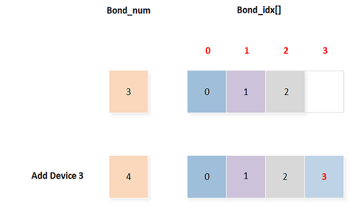
Add A Bond Device
Remove a bond device
GAP LE API:
le_bond_delete_by_idx()orle_bond_delete_by_bd().
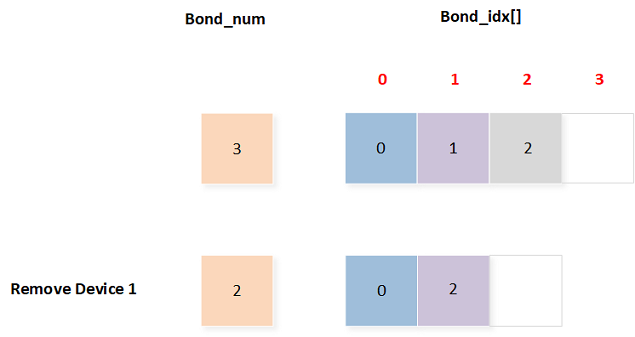
Remove A Bond Device
Clear all bond devices
GAP LE API:
le_bond_clear_all_keys().
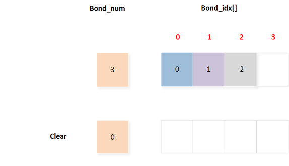
Clear All Bond Devices
Set a bond device high priority
GAP LE API:
le_set_high_priority_bond().

Set A Bond Device High Priority
Get high priority device
The highest priority device is
bond_idx[bond_num - 1].GAP LE API:
le_get_high_priority_bond().

Get High Priority Device
Get low priority device
The lowest priority device is
bond_idx[0].GAP LE API:
le_get_low_priority_bond().

Get Low Priority Device
{kind=link}
{kind=link}
{kind=link}
A priority manager example is shown as below:

Priority Manager Example
LE Key Storage
LE Key information is stored in the LE key storage space.
LE key storage space can be divided into two regions:
LE bond priority: LE priority control block. For more information, please refer to Bonded Device Priority Manager.
Bonded device keys storage block: Device index 0, index 1 and so on.
LE REMOTE BD: Save remote device address.
LE LOCAL LTK: Save local LTK.
LE REMOTE LTK: Save remote LTK.
LE REMOTE IRK: Save remote IRK.
LE LOCAL CSRK: Save local CSRK.
LE REMOTE CSRK: Save remote CSRK.
LE CCCD DATA: Save CCCD data.
LE LOCAL BD: Save local device address. RTL87x2E/RTL87x2H/RTL87x2G devices with
le_local_addr_storage_flagset to 1 can support. Enabling this feature can support devices to store different bonding information generated by the local device using different local addresses to pair with the same remote device.
Configuration
The size of the LE key storage space is related to the following two parameters:
LE Maximum Bonded Device Number: Default value is 1. It can be configured by MP Tool or by invoking
gap_config_max_le_paired_device()interface. For more information, please refer to chapter Configurations and Parameter Configuration with API.Maximum CCCD Number: Default value is 16. It can be configured by MP Tool or or by invoking
gap_config_ccc_bits_count(). For more information, please refer to chapter Configurations and Parameter Configuration with API.
LE Key Entry Structure
The GAP layer uses the structure T_LE_KEY_ENTRY to manage bonded devices.
#define LE_KEY_STORE_REMOTE_BD_BIT 0x01
#define LE_KEY_STORE_LOCAL_LTK_BIT 0x02
#define LE_KEY_STORE_REMOTE_LTK_BIT 0x04
#define LE_KEY_STORE_REMOTE_IRK_BIT 0x08
#define LE_KEY_STORE_LOCAL_CSRK_BIT 0x10
#define LE_KEY_STORE_REMOTE_CSRK_BIT 0x20
#define LE_KEY_STORE_CCCD_DATA_BIT 0x40
#define LE_KEY_STORE_LOCAL_IRK_BIT 0x80
#define LE_KEY_STORE_REMOTE_CLIENT_SUPPORTED_FEATURES_BIT 0x0100
#define LE_KEY_STORE_LOCAL_BD_BIT 0x8000
/** @brief LE key entry */
typedef struct
{
bool is_used;
uint8_t idx;
uint16_t flags;
uint8_t local_bd_type;
uint8_t app_data;
uint8_t reserved[2];
T_LE_REMOTE_BD remote_bd;
T_LE_REMOTE_BD resolved_remote_bd;
uint8_t local_bd_addr[6];
} T_LE_KEY_ENTRY;
Parameter description:
is_used: Whether to use.idx: Device index. The GAP layer can useidxto find out the storage location in FTL.flags: LE Key Storage Bits, a bit field that indicates whether the key exists.local_bd_type: Local address type used in pairing process,T_GAP_LOCAL_ADDR_TYPE.remote_bd: Remote device address.resolved_remote_bd: Identity address of remote device.local_bd_addr: Local Bluetooth device address.
LE Key Manager
When the local device pairs with a remote device or encrypts with a bonded device, the GAP layer will send GAP_MSG_LE_AUTHEN_STATE_CHANGE to notify a change in the authentication state.
void app_handle_authen_state_evt(uint8_t conn_id, uint8_t new_state, uint16_t cause)
{
APP_PRINT_INFO2("app_handle_authen_state_evt: conn_id %d, cause 0x%x", conn_id, cause);
switch (new_state)
{
case GAP_AUTHEN_STATE_STARTED:
{
APP_PRINT_INFO0("app_handle_authen_state_evt: GAP_AUTHEN_STATE_STARTED");
}
break;
case GAP_AUTHEN_STATE_COMPLETE:
{
if (cause == GAP_SUCCESS)
{
APP_PRINT_INFO0("app_handle_authen_state_evt: GAP_AUTHEN_STATE_COMPLETE pair success");
}
else
{
APP_PRINT_INFO0("app_handle_authen_state_evt: GAP_AUTHEN_STATE_COMPLETE pair failed");
}
}
break;
......
}
GAP_MSG_LE_BOND_MODIFY_INFO is used to notify APP that bond information has been modified.
typedef struct
{
T_LE_BOND_MODIFY_TYPE type;
T_LE_KEY_ENTRY *p_entry;
} T_LE_BOND_MODIFY_INFO;
T_APP_RESULT app_gap_callback(uint8_t cb_type, void *p_cb_data)
{
T_APP_RESULT result = APP_RESULT_SUCCESS;
T_LE_CB_DATA *p_data = (T_LE_CB_DATA *)p_cb_data;
switch (cb_type)
{
case GAP_MSG_LE_BOND_MODIFY_INFO:
APP_PRINT_INFO1("GAP_MSG_LE_BOND_MODIFY_INFO: type 0x%x",
p_data->p_le_bond_modify_info->type);
break;
......
}
}
Type of bond modification is defined as below.
typedef enum
{
LE_BOND_DELETE,
LE_BOND_ADD,
LE_BOND_CLEAR,
LE_BOND_FULL,
LE_BOND_KEY_MISSING,
} T_LE_BOND_MODIFY_TYPE;
LE_BOND_DELETE: Bond information has been deleted. It will be triggered under the following conditions:When the
le_bond_delete_by_idx()is invoked.When the
le_bond_delete_by_bd()is invoked.When the key storage space is full, causing the information of the lowest priority bond to be deleted.
LE_BOND_ADD: The message means that a new device has been bonded. It will only be triggered during the first pairing with a remote device.LE_BOND_CLEAR: The message means that all bond information has been deleted. It will only be triggered after invoking thele_bond_clear_all_keys()function.LE_BOND_FULL: The message means that the key storage space is full.Only when
GAP_PARAM_BOND_KEY_MANAGERis set totrue, this message will be triggered. If so, GAP will not delete the keys automatically.When set to
false, GAP will first delete the lowest priority bond information and save the current bond information, and then trigger theLE_BOND_DELETEmessage.
LE_BOND_KEY_MISSING: The message means that the link encryption has failed and the key is no longer valid. This message will only be triggered when theGAP_PARAM_BOND_KEY_MANAGERparameter is set totrue. If so, GAP will not delete the key automatically. Otherwise, GAP will delete the key and trigger theLE_BOND_DELETEmessage.
Bluetooth Device Priority Manager in GAP Layer
Pair with a new device
Key storage space is not full: The GAP layer will add the bonded device to the priority control block and send
LE_BOND_ADDto APP. This added device has the highest priority.Key storage space is full: When
GAP_PARAM_BOND_KEY_MANAGERistrue, the GAP layer will sendLE_BOND_FULLto APP; WhenGAP_PARAM_BOND_KEY_MANAGERisfalse, the GAP layer will remove the lowest priority bonded device from the priority control block and sendLE_BOND_DELETEto the APP. Then the GAP layer will add the bonded device to the priority control block and sendLE_BOND_ADDto the APP. This added device has the highest priority.
Encryption with bonded device succeeds
The GAP layer will set this bonded device as the highest priority.
Encryption with bonded device fails
When
GAP_PARAM_BOND_KEY_MANAGERistrue, the GAP layer will sendLE_BOND_KEY_MISSINGto APP.When
GAP_PARAM_BOND_KEY_MANAGERisfalse, the GAP layer will remove the bonded device from the priority control block and sendLE_BOND_DELETEto APP.
APIs
Please refer to gap_storage_le.h and gap_bond_le.h for the complete API. The following only displays partial commonly used APIs.
/* gap_storage_le.h */
T_LE_KEY_ENTRY *le_find_key_entry(uint8_t *bd_addr, T_GAP_REMOTE_ADDR_TYPE bd_type);
T_LE_KEY_ENTRY *le_find_key_entry_v2(uint8_t *remote_bd_addr, T_GAP_REMOTE_ADDR_TYPE remote_bd_type,
uint8_t *local_bd_addr, uint8_t local_bd_type);
T_LE_KEY_ENTRY *le_find_key_entry_by_idx(uint8_t idx);
uint8_t le_get_bond_dev_num(void);
T_LE_KEY_ENTRY *le_get_low_priority_bond(void);
T_LE_KEY_ENTRY *le_get_high_priority_bond(void);
bool le_set_high_priority_bond(uint8_t *bd_addr, T_GAP_REMOTE_ADDR_TYPE bd_type);
bool le_set_high_priority_bond_v2(T_LE_KEY_ENTRY *p_entry);
bool le_resolve_random_address(uint8_t *unresolved_addr, uint8_t *resolved_addr,
T_GAP_IDENT_ADDR_TYPE *resolved_addr_type);
bool le_gen_bond_dev(uint8_t *bd_addr, T_GAP_REMOTE_ADDR_TYPE bd_type,
T_GAP_LOCAL_ADDR_TYPE local_bd_type);
/* gap_bond_le.h */
void le_bond_clear_all_keys(void);
T_GAP_CAUSE le_bond_delete_by_idx(uint8_t idx);
T_GAP_CAUSE le_bond_delete_by_bd(uint8_t *bd_addr, T_GAP_REMOTE_ADDR_TYPE bd_type);
LE Address
The purpose of this chapter is to give an overview of LE address. Devices are identified using a device address. All Bluetooth devices shall have a LE address that uniquely identifies the device to another Bluetooth device.
Address Type
Bluetooth devices have multiple types of device addresses. Device addresses may either be a public device address or a random device address.
random device address: either of the following two sub-types:
Static address
Private address
private address: either of the following two sub-types:
Non-resolvable private address
Resolvable private address
Static Address
The format of a static address is shown in the figure below:

Format of Static Address
Non-resolvable Private Address
The format of a non-resolvable private address is shown in the figure below:

Format of Non-resolvable Private Address
Resolvable Private Address
The format of a resolvable private address is shown in the figure below:

Format of Resolvable Private Address
A device's identity address is a Public Device Address or Random Static Device Address that it uses in the packets that it transmits. If a device is using Resolvable Private Addresses, it shall also have an identity address.
To generate a resolvable private address, the device must have either the local IRK or the peer IRK. The resolvable private address shall be generated with the IRK and a randomly generated 24-bit number.
A resolvable private address can be resolved by the corresponding device's IRK. If a resolvable private address is resolved, the device can associate this address with the peer device.
Note
If the static address of a device is changed, then the address stored in peer devices will not be valid and the ability to reconnect using the old address will be lost.
IRK and Identity Address
The SM uses a key distribution approach to perform identity and encryption functionalities in radio communication. Identity Resolving Key (IRK) is a 128-bit key used to generate and resolve random addresses. A Central that has received the IRK from a Peripheral can resolve that periheral's random device addresses. A Peripheral that has received the IRK from a Central can resolve that Central's random device addresses. The privacy concept only protects against devices that are not part of the set to which the IRK has been given.
Identity Information is used to distribute the IRK. An all zero Identity Resolving Key data field indicates that a device does not have a valid resolvable private address.
Identity address information is used to distribute its public device address or static random address.
An example of all keys and values being distributed by Central and Peripheral is shown as below.
{kind=link}
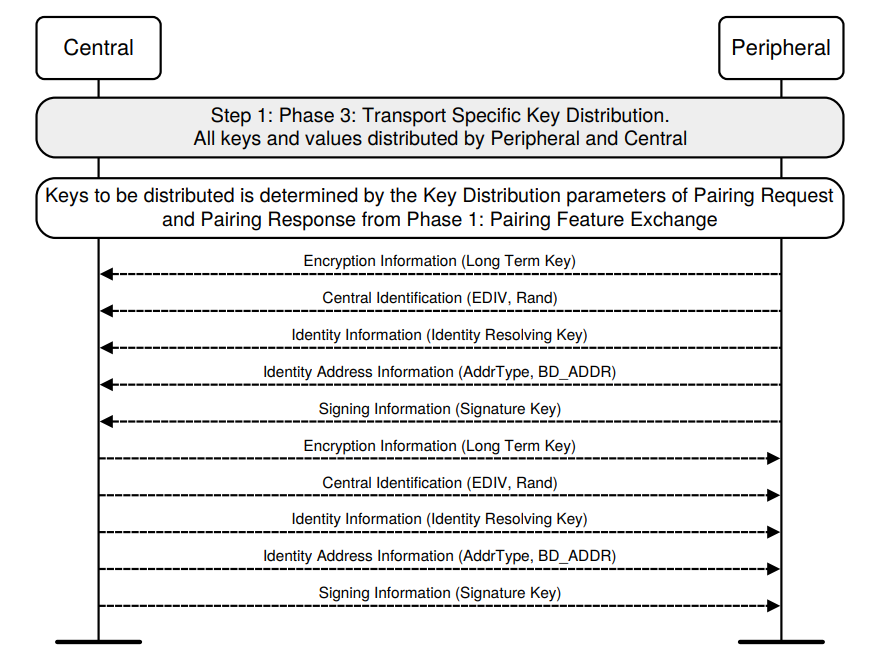
Transport Specific Key Distribution
Resolving List and Resolution
Resolving List and Filter Accept List
The Host maintains a resolving list by adding and removing device identities. A device identity consists of the peer's identity address and a local and peer's IRK pair.
When the Controller performs address resolution and the Host needs to refer to a peer device that is included in the resolving list, it uses the peer's device identity address. Likewise, all incoming events from the Controller to the Host will use the peer's device identity, provided that the peer's device address has been resolved.
Device filtering becomes possible when the address resolution is performed in the Controller because the peer's device identity address can be resolved prior to checking whether it is in the Filter Accept List.
The logical representation of the relationship between the Controller resolving list and the Controller Filter Accept List is shown as below.

Logical Representation of the Resolving List and Filter Accept List
The Filter Accept List and filter policies set by the Host are applied to the associated identity address once the Resolvable Private Address has been resolved.
Address Resolution
If address resolution is enabled in the Controller, the Controller will use the resolving list whenever the Controller receives a local or peer Resolvable Private Address.
Address resolution can be enabled or disabled at any time except when:
Advertising (other than periodic advertising) is enabled.
Scanning is enabled.
A create connection command or a periodic advertising create sync command is pending.
When address resolution is enabled in the Controller, all references to peer devices that are included in the resolving list from the Host to the Controller shall be done using the peer's device identity address. Likewise, all incoming events from the Controller to the Host will use the peer's device identity, if the peer's device address has been resolved.
The sample code of Bluetooth LE Privacy locates in LE Peripheral Privacy.
GATT Profile Server
Profile-Server: It is a public interface abstracted from the implementation of the server terminal of the GATT-Based Profile.
Overview
Server is the device that accepts incoming commands and requests from the client and sends responses, indications and notifications to a client. GATT profile defines how Bluetooth devices transmit data between GATT server and GATT client. Profile may contain one or more GATT services, service is a group of characteristics in the set, through which GATT server exposes its characteristics.
Profile Server exports APIs that the developer can use to implement a specific service. Figure Profile Server Hierarchy shows the profile server hierarchy. Content of the profile involves profile server layer and specific service. Profile server layer above the protocol stack encapsulates interfaces for specific services to access the protocol stack. So that, the development of specific services does not involve details of the protocol stack process and becomes simpler and clearer. Specific service is implemented by the APP layer which is based on the profile server layer. The specific service consists of the attribute value and provides interfaces for the APP to transmit data.

Profile Server Hierarchy
Profile Server Interaction
Profile server layer handles interaction with the protocol stack layer and provides interfaces to design specific services. Profile server interactions include adding service to server, characteristic value read, characteristic value write, characteristic value notification and characteristic value indication.
Add Service
The protocol stack maintains information of all services that have been added from the profile server layer. The total number of service attribute tables that need to be added should be initialized first. The profile server layer provides the server_init() function to initialize the service attribute table number.
void app_le_profile_init(void)
{
server_init(2);
simp_srv_id = simp_ble_service_add_service(app_profile_callback);
bas_srv_id = bas_add_service(app_profile_callback);
server_register_app_cb(app_profile_callback);
......
}
The profile server layer provides the server_add_service() interface to add services to the profile server layer.
T_SERVER_ID simp_ble_service_add_service(void *p_func)
{
if (false == server_add_service(&simp_service_id,
(uint8_t *)simple_ble_service_tbl,
sizeof(simple_ble_service_tbl),
simp_ble_service_cbs))
{
APP_PRINT_ERROR0("simp_ble_service_add_service: fail");
simp_service_id = 0xff;
return simp_service_id;
}
pfn_simp_ble_service_cb = (P_FUN_SERVER_GENERAL_CB)p_func;
return simp_service_id;
}
The diagram below illustrates a server that includes multiple service tables and the scenarios of adding services to this server.

Add Services to Server
After the service is added to the profile server layer, all services will be registered during the GAP initialization procedure. The GAP layer will send the message PROFILE_EVT_SRV_REG_COMPLETE upon completing the registration process.
The process of registering a service is shown in Register Service's Process.

Register Service's Process
Registration of services is started by sending a service register request to the protocol stack during the initialization of GAP, and then registering all services which have been added. If the server general callback function is not NULL, once the last service is registered properly, the profile server layer will send the PROFILE_EVT_SRV_REG_COMPLETE message to APP through the registered callback function app_profile_callback.
T_APP_RESULT app_profile_callback(T_SERVER_ID service_id, void *p_data)
{
T_APP_RESULT app_result = APP_RESULT_SUCCESS;
if (service_id == SERVICE_PROFILE_GENERAL_ID)
{
T_SERVER_APP_CB_DATA *p_param = (T_SERVER_APP_CB_DATA *)p_data;
switch (p_param->eventId)
{
case PROFILE_EVT_SRV_REG_COMPLETE:// srv register result event.
APP_PRINT_INFO1("PROFILE_EVT_SRV_REG_COMPLETE: result %d",
p_param->event_data.service_reg_result);
break;
......
}
Service's Callback
Server General Callback
The server general callback function is used to send events to the APP, including the service register complete event and send data complete event through the characteristic value notification or indication. This callback function shall be initialized with the server_register_app_cb() function. The server general callback function is defined in profile_server.h.
Specific Service Callback
For some attributes' value is supplied by APP, to access these attributes' value, service's callback functions shall be implemented in the specific service, which are used to handle reading/writing attribute value and the process of updating CCCD value from the client.
This callback function struct shall be initialized with the server_add_service() function. The attribute element structure is defined in profile_server.h.
/** @brief GATT service callbacks */
typedef struct
{
P_FUN_GATT_READ_ATTR_CB read_attr_cb; /**< Read callback function pointer.
Return value: @ref T_APP_RESULT. */
P_FUN_GATT_WRITE_ATTR_CB write_attr_cb; /**< Write callback function pointer.
Return value: @ref T_APP_RESULT. */
P_FUN_GATT_CCCD_UPDATE_CB cccd_update_cb; /**< Update cccd callback function pointer. */
} T_FUN_GATT_SERVICE_CBS;
read_attr_cbAttribute read callback, which is used to acquire the value of the attribute supplied by the APP when the attribute read request is sent from the client side.
write_attr_cbAttribute write callback, which is used to write the value to the attribute supplied by the APP when the attribute write request is sent from the client side.
cccd_update_cbClient characteristic configuration descriptor value update callback, which is used to inform the APP that the value of the corresponding CCCD in the service is written by the client.
const T_FUN_GATT_SERVICE_CBS simp_ble_service_cbs =
{
simp_ble_service_attr_read_cb, // Read callback function pointer
simp_ble_service_attr_write_cb, // Write callback function pointer
simp_ble_service_cccd_update_cb // CCCD update callback function pointer
};
Write Indication Post Procedure Callback
Write indication post procedure callback function is used to execute some post procedure after handling the write request from the client.
This callback function is initialized in the write attribute callback function. If there is no post procedure to be executed, the pointer of p_write_post_proc in write attribute callback function will be assigned with NULL.
Write indication post procedure callback function is defined in profile_server.h.
Characteristic Value Read
This procedure is used to read a characteristic value from a server. There are four sub-procedures that can be used to read a characteristic value, including read characteristic value, read using characteristic UUID, read long characteristic values and read multiple characteristic values. If an attribute wants to be readable, it should be configured with readable permissions. Attribute value can be read from the service or APP by using different attribute flags.
Attribute Value Supplied in Attribute Element
The attribute with flag ATTRIB_FLAG_VALUE_INCL will be involved in this procedure.
{
ATTRIB_FLAG_VALUE_INCL, /* flags */
{ /* type_value */
LO_WORD(0x2A04),
HI_WORD(0x2A04),
100,
200,
0,
LO_WORD(2000),
HI_WORD(2000)
},
5,/* bValueLen */
NULL,
GATT_PERM_READ /* permissions */
}
The interaction between each layer is shown in Read Characteristic Value-Attribute Value Supplied in Attribute Element. The protocol stack layer will read the value from the attribute element and respond to this attribute value in the read response directly.

Read Characteristic Value-Attribute Value Supplied in Attribute Element
Attribute Value Supplied by APP without Result Pending
The attribute with flag ATTRIB_FLAG_VALUE_APPL will be involved in this procedure.
{
ATTRIB_FLAG_VALUE_APPL, /* wFlags */
{ /* bTypeValue */
LO_WORD(GATT_UUID_CHAR_BLP_MEASUREMENT),
HI_WORD(GATT_UUID_CHAR_BLP_MEASUREMENT)
},
0, /* bValueLen */
NULL,
GATT_PERM_NONE /* wPermissions */
}
The interaction between each layer is shown in Read Characteristic Value-Attribute Value Supplied by APP without Result Pending. When the local device receives a read request, the protocol stack will send a read indication to the profile server layer. The profile server layer will get the value from the specific service by calling a read attribute callback. Afterwards, the profile server layer will return the data to the protocol stack through a read confirmation.

Read Characteristic Value-Attribute Value Supplied by APP without Result Pending
The sample code is shown as follows, app_profile_callback shall return APP_RESULT_SUCCESS.
T_APP_RESULT app_profile_callback(T_SERVER_ID service_id, void *p_data)
{
T_APP_RESULT app_result = APP_RESULT_SUCCESS;
......
else if (service_id == simp_srv_id)
{
TSIMP_CALLBACK_DATA *p_simp_cb_data = (TSIMP_CALLBACK_DATA *)p_data;
switch (p_simp_cb_data->msg_type)
{
case SERVICE_CALLBACK_TYPE_READ_CHAR_VALUE:
{
if (p_simp_cb_data->msg_data.read_value_index == SIMP_READ_V1)
{
uint8_t value[2] = {0x01, 0x02};
APP_PRINT_INFO0("SIMP_READ_V1");
simp_ble_service_set_parameter(SIMPLE_BLE_SERVICE_PARAM_V1_READ_CHAR_VAL, 2, &value);
}
}
break;
}
......
return app_result;
}
Attribute Value Supplied by APP with Result Pending
The attribute with flag ATTRIB_FLAG_VALUE_APPL will be involved in this procedure. Attribute value from APP can't be read immediately, so it should be transmitted by invoking the server_attr_read_confirm() in specific service. The interaction between each layer is shown in Read Characteristic Value-Attribute Value Supplied by APP with Result Pending.
{kind=link}
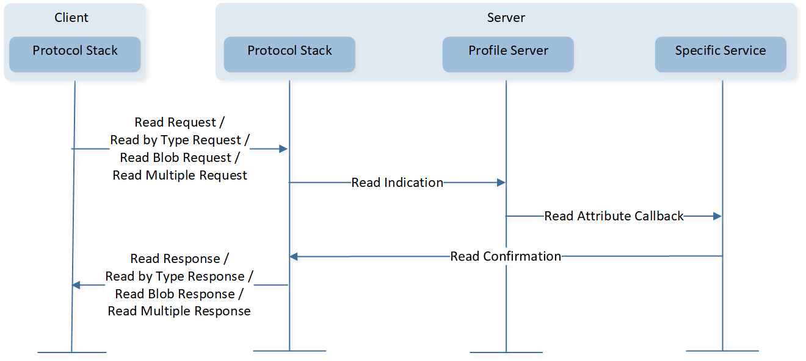
Read Characteristic Value-Attribute Value Supplied by APP with Result Pending
The sample code is shown as follows, app_profile_callback shall return APP_RESULT_PENDING.
T_APP_RESULT app_profile_callback(T_SERVER_ID service_id, void *p_data)
{
T_APP_RESULT app_result = APP_RESULT_PENDING;
......
else if (service_id == simp_srv_id)
{
TSIMP_CALLBACK_DATA *p_simp_cb_data = (TSIMP_CALLBACK_DATA *)p_data;
switch (p_simp_cb_data->msg_type)
{
case SERVICE_CALLBACK_TYPE_READ_CHAR_VALUE:
{
if (p_simp_cb_data->msg_data.read_value_index == SIMP_READ_V1)
{
uint8_t value[2] = {0x01, 0x02};
APP_PRINT_INFO0("SIMP_READ_V1");
simp_ble_service_set_parameter(SIMPLE_BLE_SERVICE_PARAM_V1_READ_CHAR_VAL, 2, &value);
}
}
break;
}
......
return app_result;
}
Characteristic Value Write
This procedure is used to write a characteristic value to a server. There are four sub-procedures that can be used to write a characteristic value, including write without response, signed write without response, write characteristic value and write long characteristic value.
Write Characteristic Value
Attribute Value Supplied in Attribute Element
The attribute with flag
ATTRIB_FLAG_VOIDwill be involved in this procedure.uint8_t cha_val_v8_011[1] = {0x08}; const T_ATTRIB_APPL gatt_dfindme_profile[] = { ...... /* handle = 0x000e Characteristic value -- Value V8 */ { ATTRIB_FLAG_VOID, /* flags */ { /* type_value */ LO_WORD(0xB008), HI_WORD(0xB008), }, 1, /* bValueLen */ (void *)cha_val_v8_011, GATT_PERM_READ | GATT_PERM_WRITE /* permissions */ } ...... }
The procedure executing between each layer is shown as below. The write request is used to request the server to write the value of an attribute and acknowledge that the write operation has been achieved with a write response directly.

Write Characteristic Value-Attribute Value Supplied in Attribute Element
Attribute Value Supplied by APP without Result Pending
The attribute with flag
ATTRIB_FLAG_VALUE_APPLwill be involved in this procedure.The interaction between each layer is shown in Write Characteristic Value-Attribute Value Supplied by APP without Result Pending. When the local device receives a write request, the protocol stack will send a write request indication to the profile server layer, and the profile server layer will write the value to the specific service by calling the write attribute callback. The profile server layer will return the write result through the write request confirmation.
If the server needs to execute a subsequent procedure after the profile server layer returns write confirmation, the pointer of the callback function
write_ind_post_proc()will be invoked if it isn't NULL.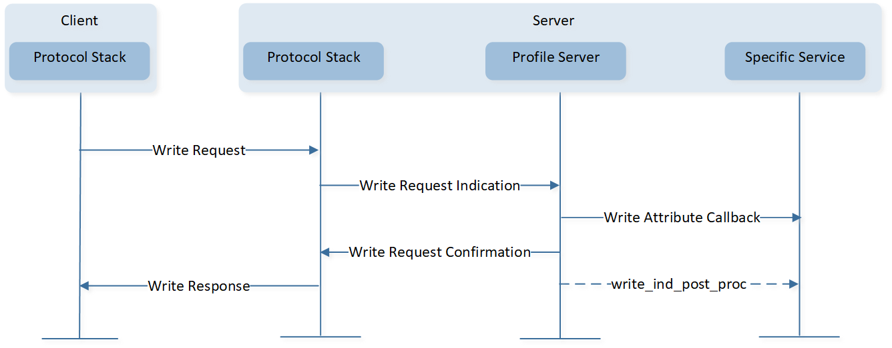
Write Characteristic Value-Attribute Value Supplied by APP without Result Pending
The APP will be notified with
srv_cbsregistered byserver_add_service(), and thewrite_typewill beWRITE_REQUEST. The sample code is shown as follows,app_profile_callbackwill return with resultAPP_RESULT_SUCCESS.T_APP_RESULT app_profile_callback(T_SERVER_ID service_id, void *p_data) { T_APP_RESULT app_result = APP_RESULT_SUCCESS; ...... else if (service_id == simp_srv_id) { TSIMP_CALLBACK_DATA *p_simp_cb_data = (TSIMP_CALLBACK_DATA *)p_data; switch (p_simp_cb_data->msg_type) { case SERVICE_CALLBACK_TYPE_WRITE_CHAR_VALUE: { switch (p_simp_cb_data->msg_data.write.opcode) { case SIMP_WRITE_V2: { APP_PRINT_INFO2("SIMP_WRITE_V2: write type %d, len %d", p_simp_cb_data->msg_data.write.write_type, p_simp_cb_data->msg_data.write.len); } ...... return app_result; }
Attribute Value Supplied by APP with Result Pending
The attribute with the flag
ATTRIB_FLAG_VALUE_APPLwill be involved in this procedure.If the write attribute value process cannot be completed immediately, the
server_attr_write_confirm()will be invoked by a specific service. The interaction between each layer is shown below. The write indication post procedure can be optional.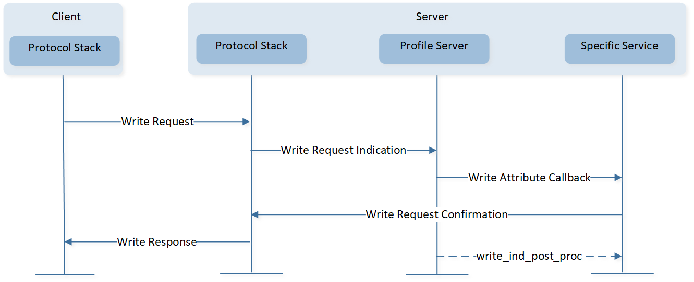
Write Characteristic Value-Attribute Value Supplied by APP with Result Pending
APP will be notified with
srv_cbsregistered byserver_add_service(), and thewrite_typewill beWRITE_REQUEST. The sample code is shown as follows,app_profile_callbackshall returnAPP_RESULT_PENDING.T_APP_RESULT app_profile_callback(T_SERVER_ID service_id, void *p_data) { T_APP_RESULT app_result = APP_RESULT_PENDING; ...... else if (service_id == simp_srv_id) { TSIMP_CALLBACK_DATA *p_simp_cb_data = (TSIMP_CALLBACK_DATA *)p_data; switch (p_simp_cb_data->msg_type) { case SERVICE_CALLBACK_TYPE_WRITE_CHAR_VALUE: { switch (p_simp_cb_data->msg_data.write.opcode) { case SIMP_WRITE_V2: { APP_PRINT_INFO2("SIMP_WRITE_V2: write type %d, len %d", p_simp_cb_data->msg_data.write.write_type, p_simp_cb_data->msg_data.write.len); } ...... return app_result; }
Write CCCD Value
If the local device receives a write request from the client for writing characteristic configuration declaration, the protocol stack updates CCCD information. Afterwards, the profile server layer informs the APP that CCCD information has been updated by the update CCCD callback function. The interaction between each layer is shown in Figure-Write Characteristic Value-Write CCCD Value.

Write Characteristic Value-Write CCCD Value
void simp_ble_service_cccd_update_cb(uint8_t conn_id, T_SERVER_ID service_id, uint16_t index, uint16_t cccbits) { TSIMP_CALLBACK_DATA callback_data; bool is_handled = false; callback_data.conn_id = conn_id; callback_data.msg_type = SERVICE_CALLBACK_TYPE_INDIFICATION_NOTIFICATION; APP_PRINT_INFO2("simp_ble_service_cccd_update_cb: index = %d, cccbits 0x%x", index, cccbits); switch (index) { case SIMPLE_BLE_SERVICE_CHAR_NOTIFY_CCCD_INDEX: { if (cccbits & GATT_CLIENT_CHAR_CONFIG_NOTIFY) { // Enable Notification callback_data.msg_data.notification_indification_index = SIMP_NOTIFY_INDICATE_V3_ENABLE; } else { // Disable Notification callback_data.msg_data.notification_indification_index = SIMP_NOTIFY_INDICATE_V3_DISABLE; } is_handled = true; } break; case SIMPLE_BLE_SERVICE_CHAR_INDICATE_CCCD_INDEX: { if (cccbits & GATT_CLIENT_CHAR_CONFIG_INDICATE) { // Enable Indication callback_data.msg_data.notification_indification_index = SIMP_NOTIFY_INDICATE_V4_ENABLE; } else { // Disable Indication callback_data.msg_data.notification_indification_index = SIMP_NOTIFY_INDICATE_V4_DISABLE; } is_handled = true; } break; default: break; } /* Notify APP. */ if (pfn_simp_ble_service_cb && (is_handled == true)) { pfn_simp_ble_service_cb(service_id, (void *)&callback_data); } }
APP will be notified with
srv_cbsregistered byserver_add_service(), and themsg_typewill beSERVICE_CALLBACK_TYPE_INDIFICATION_NOTIFICATION.T_APP_RESULT app_profile_callback(T_SERVER_ID service_id, void *p_data) { T_APP_RESULT app_result = APP_RESULT_SUCCESS; ...... else if (service_id == simp_srv_id) { TSIMP_CALLBACK_DATA *p_simp_cb_data = (TSIMP_CALLBACK_DATA *)p_data; switch (p_simp_cb_data->msg_type) { case SERVICE_CALLBACK_TYPE_INDIFICATION_NOTIFICATION: { switch (p_simp_cb_data->msg_data.notification_indification_index) { case SIMP_NOTIFY_INDICATE_V3_ENABLE: { APP_PRINT_INFO0("SIMP_NOTIFY_INDICATE_V3_ENABLE"); } break; case SIMP_NOTIFY_INDICATE_V3_DISABLE: { APP_PRINT_INFO0("SIMP_NOTIFY_INDICATE_V3_DISABLE"); } break; case SIMP_NOTIFY_INDICATE_V4_ENABLE: { APP_PRINT_INFO0("SIMP_NOTIFY_INDICATE_V4_ENABLE"); } break; case SIMP_NOTIFY_INDICATE_V4_DISABLE: { APP_PRINT_INFO0("SIMP_NOTIFY_INDICATE_V4_DISABLE"); } break; default: break; } } break; ...... return app_result; }
{kind=link}
{kind=link}
Write without Response/Signed Write without Response
The difference between write without response/signed write without response procedure and write characteristic value procedure is server shall not respond with a write result to the client.
Attribute Value Supplied by Application
The attribute with flag ATTRIB_FLAG_VALUE_APPL will be involved in this procedure.
The procedure executed between each layer is shown in Write/Signed Write without Response-Attribute Value Supplied by APP. When the local device receives write command or signed write command, write_attr_cb() registered by server_add_service() will be called.
APP will be notified with srv_cbs registered by server_add_service(), and the write_type will be WRITE_WITHOUT_RESPONSE or WRITE_SIGNED_WITHOUT_RESPONSE.
{kind=link}
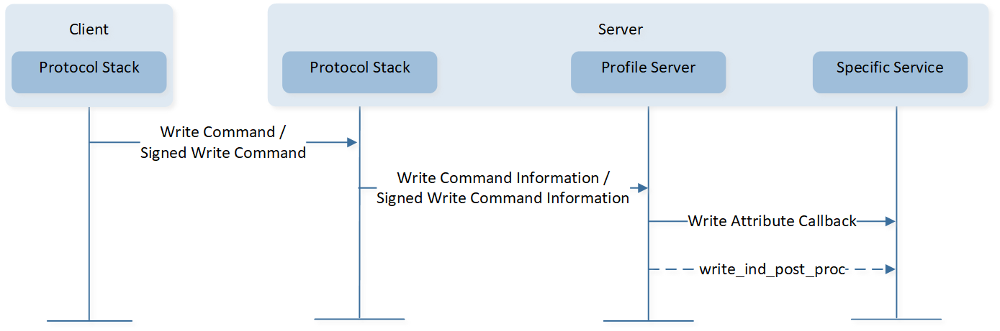
Write/Signed Write without Response-Attribute Value Supplied by APP
Write Long Characteristic Values
Prepare Write
If the length of characteristic value is longer than the supported maximum length (
ATT_MTU-3) of the characteristic value in a write request attribute protocol message, a prepare write request will be used by the client. The value to be written is stored in the profile server layer buffer first, then the profile server layer handles the prepare write request indication, and responds with a prepare write confirmation. and the respond with a write prepare write confirmation.This procedure executed between each layer is shown as below:

Write Long Characteristic Values-Prepare Write Procedure
Execute Write without Result Pending
After sending the prepare write request, an execute write request is used to complete the process of writing the attribute value. APP will be notified with
srv_cbsregistered byserver_add_service(), and thewrite_typewill beWRITE_LONG. Write indication post procedure is optional.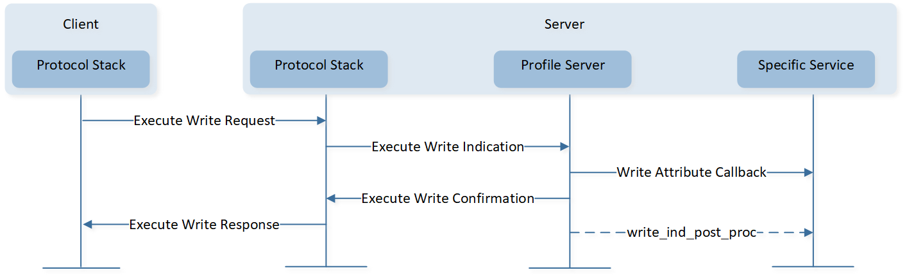
Write Long Characteristic Values-Execute Write without Result Pending
Execute Write with Result Pending
If the process of writing value can't be completed immediately,
server_exec_write_confirm()shall be invoked by the specific service. Write indication post procedure is optional.This interaction between each layer is shown as below:
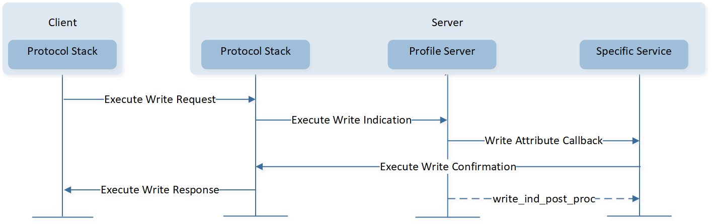
Write Long Characteristic Values-Execute Write with Result Pending
{kind=link}
{kind=link}
Characteristic Value Notification
This procedure is used to notify a client of a characteristic value from a server.
Server sends data by actively invoking server_send_data() function. After the send data procedure is completed, it is optional to inform the APP by the server general callback function.
The interaction between each layer is shown as below:

Characteristic Value Notification
bool simp_ble_service_send_v3_notify(uint8_t conn_id, T_SERVER_ID service_id, void *p_value,
uint16_t length)
{
APP_PRINT_INFO0("simp_ble_service_send_v3_notify");
// send notification to client
return server_send_data(conn_id, service_id, SIMPLE_BLE_SERVICE_CHAR_V3_NOTIFY_INDEX, p_value,
length,
GATT_PDU_TYPE_ANY);
}
Because notification does not require a response, notification does not have any flow control in the ATT layer. However, because of the limitation of resources, Bluetooth Host has flow control for notification.
Flow control for notification is implemented with a credits value maintained in GAP layer, which allows APP to send notifications in number of credits, without waiting for a response from the Bluetooth Host. The Bluetooth Host can cache the data of the notification in number of credits.
Credit count decreases by one when the profile server layer sends a notification to the Bluetooth Host.
Credit count increases by one when the profile server layer receives a response from the Bluetooth Host. When the notification is sent to air, the Bluetooth Host will send a response to the profile server layer.
Notifications shall only be sent when the credit count is greater than zero.
If APP wants to send multiple data to the Bluetooth Host. Firstly, APP can call le_get_gap_param() to get credit.
If credit > 0, it means the Bluetooth Host still has buffer cache data, and the APP can send data to the Bluetooth Host. If credit is 0, it means that the Bluetooth Host has no more buffer cache data, and the notification needs to wait for the buffer to be released before sending it.
void test(void)
{
/*get remaining credit*/
uint8_t credit;
le_get_gap_param(GAP_PARAM_LE_REMAIN_CREDITS, &credit);
/*If multiple data need to be sent*/
while (credit > 0)
{
......
/*If credit > 0, the Bluetooth Host still has buffer cache data, and the APP can send data to the Bluetooth protocol stack*/
if (server_send_data(conn_id, service_id, attr_idx,
data, data_length, GATT_PDU_TYPE_NOTIFICATION))
{
credit--;
}
}
/*If credit is 0, it means that the Bluetooth Host has no more buffer cache data,
and the Notification needs to wait for the buffer to be released before sending it.*/
}
After notification data is sent successfully, the service callback function can be informed of the current credit.
T_APP_RESULT app_xxx_service_callback(T_SERVER_ID service_id, void *p_data)
{
......
if (service_id == SERVICE_PROFILE_GENERAL_ID)
{
......
switch (p_param->eventId)
{
......
case PROFILE_EVT_SEND_DATA_COMPLETE:
APP_PRINT_INFO5("app_xxx_service_callback: PROFILE_EVT_SEND_DATA_COMPLETE conn_id %d, cause 0x%x, service_id %d, attrib_idx 0x%x, credits %d",
p_param->event_data.send_data_result.conn_id,
p_param->event_data.send_data_result.cause,
p_param->event_data.send_data_result.service_id,
p_param->event_data.send_data_result.attrib_idx,
p_param->event_data.send_data_result.credits);
if (p_param->event_data.send_data_result.cause == GAP_SUCCESS)
{
APP_PRINT_INFO0("app_xxx_service_callback: PROFILE_EVT_SEND_DATA_COMPLETE success");
uint8_t credit = p_param->event_data.send_data_result.credits;
/*Buffer has been freed, if more data still needs to be sent*/
while (credit > 0)
{
......
if (server_send_data(conn_id, service_id, attr_idx,
data, data_length, GATT_PDU_TYPE_NOTIFICATION))
{
credit--;
}
}
}
else
{
APP_PRINT_ERROR0("app_xxx_service_callback: PROFILE_EVT_SEND_DATA_COMPLETE failed");
}
break;
}
}
}
Characteristic Value Indication
This procedure is used to indicate the client of a characteristic value from a server. Once the indication is received, the client shall respond with a confirmation. After the server receives handle value confirmation, it is then optional to inform the APP by the server general callback function.
The interaction between each layer is shown as below:

Characteristic Value Indication
Caution
Unlike notifications, indications require a response from the peer. Indications sent from a server should follow a sequential indication-confirmation protocol. No other indications shall be sent to the same client from this server on the same ATT bearer until a confirmation PDU has been received from the client.
bool simp_ble_service_send_v4_indicate(uint8_t conn_id, T_SERVER_ID service_id, void *p_value,
uint16_t length)
{
APP_PRINT_INFO0("simp_ble_service_send_v4_indicate");
// send indication to client
return server_send_data(conn_id, service_id, SIMPLE_BLE_SERVICE_CHAR_V4_INDICATE_INDEX, p_value,
length, GATT_PDU_TYPE_ANY);
}
app_profile_callback will be called after handle value confirmation.
T_APP_RESULT app_profile_callback(T_SERVER_ID service_id, void *p_data)
{
T_APP_RESULT app_result = APP_RESULT_SUCCESS;
if (service_id == SERVICE_PROFILE_GENERAL_ID)
{
T_SERVER_APP_CB_DATA *p_param = (T_SERVER_APP_CB_DATA *)p_data;
switch (p_param->eventId)
{
......
case PROFILE_EVT_SEND_DATA_COMPLETE:
APP_PRINT_INFO5("PROFILE_EVT_SEND_DATA_COMPLETE: conn_id %d, cause 0x%x, service_id %d, attrib_idx 0x%x, credits %d",
p_param->event_data.send_data_result.conn_id,
p_param->event_data.send_data_result.cause,
p_param->event_data.send_data_result.service_id,
p_param->event_data.send_data_result.attrib_idx,
p_param->event_data.send_data_result.credits);
if (p_param->event_data.send_data_result.cause == GAP_SUCCESS)
{
APP_PRINT_INFO0("PROFILE_EVT_SEND_DATA_COMPLETE success");
}
else
{
APP_PRINT_ERROR0("PROFILE_EVT_SEND_DATA_COMPLETE failed");
}
break;
default:
break;
}
}
}
Implementation of Specific Service
A profile is composed of one or more services which are necessary to fulfill a use case. A service is composed of characteristics. Each characteristic contains a characteristic value and may contain an optional characteristic descriptor. The service, characteristic and the components of the characteristic (i.e. value and descriptors) contain the profile data and are all stored in attributes on the server.
The guideline on how to develop a specific service is as follows:
Define Service and Profile Spec.
Define Service Attribute Table.
Define interface between Service and APP.
Define
xxx_add_service,xxx_set_parameter,xxx_notify,xxx_indicateAPI etc.Implement
xxx_ble_service_cbswith type ofT_FUN_GATT_SERVICE_CBSAPIs.
In this chapter, a simple LE service will be taken as an example, and a guide on how to implement a specific service will be provided. For more details, refer to the source code in simple_ble_service.c and simple_ble_service.h.
Define Service and Profile Spec
In order to implement a specific service, it is necessary to define the service and profile spec.
Define Service Table
A service that is composed of attribute elements is defined by a service table which consists of one or more services.
Attribute Element
An attribute element is an elementary unit of service. The structure of the attribute element is defined in gatt.h.
typedef struct
{
uint16_t flags; /**< Attribute flags @ref GATT_ATTRIBUTE_FLAG */
uint8_t type_value[2 + 14]; /**< 16 bit UUID + included value or 128 bit UUID */
uint16_t value_len; /**< Length of value */
void *p_value_context; /**< Pointer to value if @ref ATTRIB_FLAG_VALUE_INCL
and @ref ATTRIB_FLAG_VALUE_APPL not set */
uint32_t permissions; /**< Attribute permission @ref GATT_ATTRIBUTE_PERMISSIONS */
} T_ATTRIB_APPL;
Flags
Flags option value and description are shown in Table-Flags Option Value and Description.
Flags Option Value and Description Option Values
Description
Used only for primary service declaration attributes if GATT over LE is supported.
Attribute value is neither supplied by APP nor included following 16-bit UUID.
Attribute value is pointed by
p_value_contextandvalue_lenshall be set to the length of attribute value.Attribute value is included following 16-bit UUID.
APP has to supply attribute value.
Attribute uses 128-bit UUID.
Attribute value is ASCII_Z string.
APP will be informed if CCCD value is changed.
APP will be informed about CCCD value when CCCD is written by client, no matter it is changed or not.
Parameter description:
ATTRIB_FLAG_LE: Can only be used by the attribute whose type is primary service declaration, to indicate that primary service allows LE link access.ATTRIB_FLAG_VOID,ATTRIB_FLAG_VALUE_INCL,ATTRIB_FLAG_VALUE_APPL: Attribute element must pick one value among.ATTRIB_FLAG_VALUE_INCL: Flag means attribute value will be put into the last fourteen bytes oftype_value(the first two bytes oftype_valueis used to save UUID), andvalue_lenis the number of the bytes put into the region of the last fourteen bytes. As attribute value has been provided intype_value,p_value_contextpointer is assigned with NULL.ATTRIB_FLAG_VALUE_APPL: Flag means attribute value is supplied by APP. As long as the stack is involved in an attribute value related operation, it will interact with the APP to fulfil the corresponding operation process. As attribute value is provided by APP, only the UUID of the attribute is required to be put intotype_value, whilevalue_lenis 0 andp_value_contextpointer is assigned with NULL.ATTRIB_FLAG_VOID: Flag means attribute value is neither supplied in the last 14 bytes oftype_valuenor by APP. Only the UUID of the attribute is required intype_value,p_value_contextpointer points to attribute value andvalue_lenindicates the length of the attribute value.
Table-Flags Value Select Mode shows the flags value and actual value used by read attribute process.
Flags Value Select Mode APPL
APPL|SCII_Z
INCL
INCL|ASCII_Z
VOID
VOID|ASCII_Z
If Set
value_lenAny (NULL)
Any (NULL)
Strlen (Value)
Strlen (Value)
Strlen (Value)
Strlen (Value)
type_value+2Any (NULL)
Any (NULL)
Value
Value
Any (NULL)
Any (NULL)
p_value_contextAny (NULL)
Any (NULL)
Any (NULL)
Any (NULL)
Value
Value
Actual Get by Read Attribute Process
Actual Length
Reply by APP
Reply by APP
Strlen (Value)
Strlen (Value)+1
Strlen (Value)
Strlen (Value)+1
Actual Value
Reply by APP
Reply by APP
Value
Value+
\0Value
Value+
\0Note
APPL:
ATTRIB_FLAG_VALUE_APPLVOID:
ATTRIB_FLAG_VOIDINCL:
ATTRIB_FLAG_VALUE_INCLASCII_Z:
ATTRIB_FLAG_ASCII_Z
Permissions
The permissions associated with the attribute specify the security level required for read and/or write access, as well as notification and/or indication. Value of permissions is used to indicate permission of the attribute. Attribute permissions are a combination of access permissions, encryption permissions, authentication permissions and authorization permissions, and their acceptable values are given in Table-Value of Permissions.
Value of Permissions Types
Permissions
Read Permissions
Write Permissions
Notify/Indicate Permissions
Service Table
Service contains a group of attributes that are called a service table. A service table contains various types of attributes, such as the service declaration, characteristic declaration, characteristic value and characteristic descriptor declaration.
An example of a service table is given in Table-Service Table Example, and it is implemented in simple_ble_service.c of LE Peripheral project.
Flags |
Attribute Type |
Attribute Value |
Permission |
|---|---|---|---|
INCL | LE |
Primary Service Declaration |
UUID (0xA00A) |
Read |
INCL |
Characteristic Declaration |
Property (Read) |
Read |
APPL |
Characteristic Value |
UUID (0xB001), value not defined here. |
Read |
VOID | ASCII_Z |
Characteristic User Description |
UUID (0x2901), value defined in |
Read |
INCL |
Characteristic Declaration |
Property (Write|Write without response) |
Read |
APPL |
Characteristic Value |
UUID (0xB002), value not defined here. |
Write |
INCL |
Characteristic Declaration |
Property (Notify) |
Read |
APPL |
Characteristic Value |
UUID (0xB003), value not defined here. |
None |
CCCD_APPL |
Client Characteristic Configuration Descriptor |
Default CCCD value |
Read|Write |
INCL |
Characteristic Declaration |
Property (Indicate) |
Read |
APPL |
Characteristic Value |
UUID (0xB004), value not defined here. |
None |
CCCD_APPL |
Client Characteristic Configuration Descriptor |
Default CCCD value |
Read|Write |
Note
LE is abbreviation of
ATTRIB_FLAG_LE.INCL is abbreviation of
ATTRIB_FLAG_VALUE_INCL.APPL is abbreviation of
ATTRIB_FLAG_VALUE_APPL.
The sample code for service table is as follows:
/**< @brief profile/service definition. */
const T_ATTRIB_APPL simple_ble_service_tbl[] =
{
/* <<Primary Service>>, .. */
{
(ATTRIB_FLAG_VALUE_INCL | ATTRIB_FLAG_LE), /* flags */
{ /* type_value */
LO_WORD(GATT_UUID_PRIMARY_SERVICE),
HI_WORD(GATT_UUID_PRIMARY_SERVICE),
LO_WORD(GATT_UUID_SIMPLE_PROFILE), /* service UUID */
HI_WORD(GATT_UUID_SIMPLE_PROFILE)
},
UUID_16BIT_SIZE, /* bValueLen */
NULL, /* p_value_context */
GATT_PERM_READ /* permissions */
},
/* <<Characteristic>> demo for read */
{
ATTRIB_FLAG_VALUE_INCL, /* flags */
{ /* type_value */
LO_WORD(GATT_UUID_CHARACTERISTIC),
HI_WORD(GATT_UUID_CHARACTERISTIC),
GATT_CHAR_PROP_READ /* characteristic properties */
/* characteristic UUID not needed here, is UUID of next attrib. */
},
1, /* bValueLen */
NULL,
GATT_PERM_READ /* permissions */
},
{
ATTRIB_FLAG_VALUE_APPL, /* flags */
{ /* type_value */
LO_WORD(GATT_UUID_CHAR_SIMPLE_V1_READ),
HI_WORD(GATT_UUID_CHAR_SIMPLE_V1_READ)
},
0, /* bValueLen */
NULL,
#if SIMP_SRV_AUTHEN_EN
GATT_PERM_READ_AUTHEN_REQ /* permissions */
#else
GATT_PERM_READ /* permissions */
#endif
},
{
ATTRIB_FLAG_VOID | ATTRIB_FLAG_ASCII_Z, /* flags */
{ /* type_value */
LO_WORD(GATT_UUID_CHAR_USER_DESCR),
HI_WORD(GATT_UUID_CHAR_USER_DESCR),
},
(sizeof(v1_user_descr) - 1), /* bValueLen */
(void *)v1_user_descr,
GATT_PERM_READ /* permissions */
},
/* <<Characteristic>> demo for write */
{
ATTRIB_FLAG_VALUE_INCL, /* flags */
{ /* type_value */
LO_WORD(GATT_UUID_CHARACTERISTIC),
HI_WORD(GATT_UUID_CHARACTERISTIC),
(GATT_CHAR_PROP_WRITE | GATT_CHAR_PROP_WRITE_NO_RSP) /* characteristic properties */
/* characteristic UUID not needed here, is UUID of next attrib. */
},
1, /* bValueLen */
NULL,
GATT_PERM_READ /* permissions */
},
{
ATTRIB_FLAG_VALUE_APPL, /* flags */
{ /* type_value */
LO_WORD(GATT_UUID_CHAR_SIMPLE_V2_WRITE),
HI_WORD(GATT_UUID_CHAR_SIMPLE_V2_WRITE)
},
0, /* bValueLen */
NULL,
#if SIMP_SRV_AUTHEN_EN
GATT_PERM_WRITE_AUTHEN_REQ /* permissions */
#else
GATT_PERM_WRITE /* permissions */
#endif
},
/* <<Characteristic>>, demo for notify */
{
ATTRIB_FLAG_VALUE_INCL, /* flags */
{ /* type_value */
LO_WORD(GATT_UUID_CHARACTERISTIC),
HI_WORD(GATT_UUID_CHARACTERISTIC),
(GATT_CHAR_PROP_NOTIFY) /* characteristic properties */
/* characteristic UUID not needed here, is UUID of next attrib. */
},
1, /* bValueLen */
NULL,
GATT_PERM_READ /* permissions */
},
{
ATTRIB_FLAG_VALUE_APPL, /* flags */
{ /* type_value */
LO_WORD(GATT_UUID_CHAR_SIMPLE_V3_NOTIFY),
HI_WORD(GATT_UUID_CHAR_SIMPLE_V3_NOTIFY)
},
0, /* bValueLen */
NULL,
GATT_PERM_NONE /* permissions */
},
/* client characteristic configuration */
{
ATTRIB_FLAG_VALUE_INCL | ATTRIB_FLAG_CCCD_APPL, /* flags */
{ /* type_value */
LO_WORD(GATT_UUID_CHAR_CLIENT_CONFIG),
HI_WORD(GATT_UUID_CHAR_CLIENT_CONFIG),
/* NOTE: this value has an instantiation for each client, a write to */
/* this attribute does not modify this default value: */
LO_WORD(GATT_CLIENT_CHAR_CONFIG_DEFAULT), /* client char. config. bit field */
HI_WORD(GATT_CLIENT_CHAR_CONFIG_DEFAULT)
},
2, /* bValueLen */
NULL,
#if SIMP_SRV_AUTHEN_EN
(GATT_PERM_READ_AUTHEN_REQ | GATT_PERM_WRITE_AUTHEN_REQ) /* permissions */
#else
(GATT_PERM_READ | GATT_PERM_WRITE) /* permissions */
#endif
},
/* <<Characteristic>> demo for indicate */
{
ATTRIB_FLAG_VALUE_INCL, /* flags */
{ /* type_value */
LO_WORD(GATT_UUID_CHARACTERISTIC),
HI_WORD(GATT_UUID_CHARACTERISTIC),
(GATT_CHAR_PROP_INDICATE) /* characteristic properties */
/* characteristic UUID not needed here, is UUID of next attrib. */
},
1, /* bValueLen */
NULL,
GATT_PERM_READ /* permissions */
},
{
ATTRIB_FLAG_VALUE_APPL, /* flags */
{ /* type_value */
LO_WORD(GATT_UUID_CHAR_SIMPLE_V4_INDICATE),
HI_WORD(GATT_UUID_CHAR_SIMPLE_V4_INDICATE)
},
0, /* bValueLen */
NULL,
GATT_PERM_NONE /* permissions */
},
/* client characteristic configuration */
{
ATTRIB_FLAG_VALUE_INCL | ATTRIB_FLAG_CCCD_APPL, /* flags */
{ /* type_value */
LO_WORD(GATT_UUID_CHAR_CLIENT_CONFIG),
HI_WORD(GATT_UUID_CHAR_CLIENT_CONFIG),
/* NOTE: this value has an instantiation for each client, a write to */
/* this attribute does not modify this default value: */
LO_WORD(GATT_CLIENT_CHAR_CONFIG_DEFAULT), /* client char. config. bit field */
HI_WORD(GATT_CLIENT_CHAR_CONFIG_DEFAULT)
},
2, /* bValueLen */
NULL,
#if SIMP_SRV_AUTHEN_EN
(GATT_PERM_READ_AUTHEN_REQ | GATT_PERM_WRITE_AUTHEN_REQ) /* permissions */
#else
(GATT_PERM_READ | GATT_PERM_WRITE) /* permissions */
#endif
},
};
Define Interface between Service and APP
When a service attribute value is read or written, the notification will be passed to the APP by a callback registered by the APP.
Taking a simple LE service as an example, developers can define a data type TSIMP_CALLBACK_DATA to hold the notification result.
typedef struct
{
uint8_t conn_id;
T_SERVICE_CALLBACK_TYPE msg_type;
TSIMP_UPSTREAM_MSG_DATA msg_data;
} TSIMP_CALLBACK_DATA;
msg_typeindicates it is a read, write or CCCD update operation.typedef enum { SERVICE_CALLBACK_TYPE_INDIFICATION_NOTIFICATION = 1, /**< CCCD update event */ SERVICE_CALLBACK_TYPE_READ_CHAR_VALUE = 2, /**< client read event */ SERVICE_CALLBACK_TYPE_WRITE_CHAR_VALUE = 3, /**< client write event */ } T_SERVICE_CALLBACK_TYPE;
msg_dataholds the data of the read, write, or CCCD update operation.
Define xxx_add_service(), xxx_set_parameter(), xxx_notify(), xxx_indicate() API, etc.
xxx_add_serviceIt is used to add service table to profile server layer, and register a callback for service attribute read, write or CCCD update.
xxx_set_parameterIt is used to set service related data by APP.
xxx_notifyIt is used to send notification data.
xxx_indicateIt is used to send indication data.
Implement xxx_ble_service_cbs with type of T_FUN_GATT_SERVICE_CBS
xxx_ble_service_cbs is used to handle read, write or CCCD update operation from remote profile client.
const T_FUN_GATT_SERVICE_CBS simp_ble_service_cbs =
{
simp_ble_service_attr_read_cb, // Read callback function pointer
simp_ble_service_attr_write_cb, // Write callback function pointer
simp_ble_service_cccd_update_cb // CCCD update callback function pointer
};
Callback is registered by server_add_service() which is called in xxx_ble_service_add_service.
T_SERVER_ID simp_ble_service_add_service(void *p_func)
{
if (false == server_add_service(&simp_service_id,
(uint8_t *)simple_ble_service_tbl,
sizeof(simple_ble_service_tbl),
simp_ble_service_cbs))
{
APP_PRINT_ERROR0("simp_ble_service_add_service: fail");
simp_service_id = 0xff;
return simp_service_id;
}
pfn_simp_ble_service_cb = (P_FUN_SERVER_GENERAL_CB)p_func;
return simp_service_id;
}
GATT Profile Client
Profile-Client: It is a public interface abstracted from the implementation of the client terminal of GATT-Based Profile.
Overview
The client interface of the profile offers developers the functions to discover services at GATT Server, receive and handle indications and notifications from GATT Server, and send read/write requests to GATT Server.
The figure below shows the profile client hierarchy. Contents of the profile involve profile client layer and specific profile client. Profile client layer above protocol stack encapsulates interfaces for specific client to access the protocol stack. Thus, development of specific clients does not involve details of the protocol stack process and becomes simpler and clearer. Specific client which is based on the profile client layer is implemented by the APP layer. Implementation of specific profile client is quite different from that of profile server. Profile client does not involve attribute table and provides functions to collect and acquire information instead of providing service and information.
{kind=link}
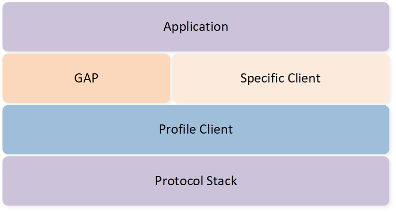
Profile Client Hierarchy
Profile Client Layer
Profile client layer handles interaction with the protocol stack layer and provides interfaces to design a specific client. The client will discover services and characteristics of the server, read and write attributes, and receive and handle notifications and indications from the server.
Client General Callback
The client general callback function is used to send client_all_primary_srv_discovery() result to APP when client_id is CLIENT_PROFILE_GENERAL_ID. This callback function can be initialized with client_register_general_client_cb() function.
void app_le_profile_init(void)
{
client_init(3);
......
client_register_general_client_cb(app_client_callback);
}
static T_USER_CMD_PARSE_RESULT cmd_srvdis(T_USER_CMD_PARSED_VALUE *p_parse_value)
{
uint8_t conn_id = p_parse_value->dw_param[0];
T_GAP_CAUSE cause;
cause = client_all_primary_srv_discovery(conn_id, CLIENT_PROFILE_GENERAL_ID);
return (T_USER_CMD_PARSE_RESULT)cause;
}
T_APP_RESULT app_client_callback(T_CLIENT_ID client_id, uint8_t conn_id, void *p_data)
{
T_APP_RESULT result = APP_RESULT_SUCCESS;
APP_PRINT_INFO2("app_client_callback: client_id %d, conn_id %d",
client_id, conn_id);
if (client_id == CLIENT_PROFILE_GENERAL_ID)
{
T_CLIENT_APP_CB_DATA *p_client_app_cb_data = (T_CLIENT_APP_CB_DATA *)p_data;
switch (p_client_app_cb_data->cb_type)
{
case CLIENT_APP_CB_TYPE_DISC_STATE:
......
}
}
}
If APP does not use client_all_primary_srv_discovery() with the client_id set to CLIENT_PROFILE_GENERAL_ID, APP does not need to register this general callback.
Specific Client Callback
Add Client
The profile client layer maintains information on all added specific clients. The total number of all client tables to be added shall be initialized by invoking client_init() supplied by the profile client layer.
The profile client layer provides the client_register_spec_client_cb() interface to register specific client callbacks. Add Specific Clients to Profile Client Layer shows that the client layer contains several specific client tables.
{kind=link}
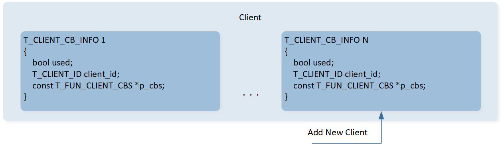
Add Specific Clients to Profile Client Layer
APP adds specific client to the Profile Client Layer, and the APP will record the returned client ID for each added specific client for the implementation of the subsequent data interaction process.
Callbacks
Specific client's callback functions shall be implemented in the specific client module. The specific client callback structure is defined in profile_client.h.
typedef struct
{
P_FUN_DISCOVER_STATE_CB discover_state_cb; //!< Discovery state callback function pointer
P_FUN_DISCOVER_RESULT_CB discover_result_cb; //!< Discovery result callback function pointer
P_FUN_READ_RESULT_CB read_result_cb; //!< Read response callback function pointer
P_FUN_WRITE_RESULT_CB write_result_cb; //!< Write result callback function pointer
P_FUN_NOTIFY_IND_RESULT_CB notify_ind_result_cb;//!< Notify Indication callback function pointer
P_FUN_DISCONNECT_CB disconnect_cb; //!< Disconnection callback function pointer
} T_FUN_CLIENT_CBS;
Parameter description:
discover_state_cb: Discovery state callback, which is used to inform the specific client module about the discovery state ofclient_xxx_discovery.discover_result_cb: Discovery result callback, which is used to inform the specific client module of the discovery result ofclient_xxx_discovery.read_result_cb: Read result callback, which is used to inform the specific client module of the read result ofclient_attr_read()orclient_attr_read_using_uuid().write_result_cb: Write result callback, which is used to inform the specific client module of the write result ofclient_attr_write().notify_ind_result_cb: Notification and indication callback, which is used to inform the specific client module that notification or indication data is received from the server.disconnect_cb: Disconnection callback, which is used to inform the specific client module that an LE link is disconnected.
Discovery Procedure
After establishing a connection to the server, the client generally performs a discovery process if the local device does not store the handle information of the server. The specific client needs to call client_xxx_discovery to start the discovery procedure. Then, the specific client needs to handle the discovery state in the discover_state_cb callback and the discovery result in the callback discover_result_cb().
The interaction between each layer is shown as below:

GATT Discovery Procedure
Discovery State
Reference API |
|
|---|---|
Discovery Result
Reference API |
||
|---|---|---|
|
||
|
||
|
||
|
||
|
||
|
||
|
||
|
||
|
||
|
||
|
Characteristic Value Read
This procedure is used to read a characteristic value of a server. There are two sub-procedures in the profile client layer that can be used to read a characteristic value: Read Characteristic Value by Handle and Read Characteristic Value by UUID.
Read Characteristic Value by Handle
This sub-procedure is used to read a characteristic value from a server when the client knows the characteristic value handle. Reading characteristic value by handle is a three-phase process. Phase 1 and phase 3 are always used. Phase 2 is an optional phase.
Phase 1: Call
client_attr_read()to read Characteristic Value.Phase 2: Optional phase. If the characteristic value is greater than (
ATT_MTU-1) octets in length, the Read Response only contains the first portion of the characteristic value, and the Read Long Characteristic Value procedure will be used.Phase 3: Profile client layer calls
read_result_cb()to return read result.
The interaction between each layer is shown as below:
{kind=link}
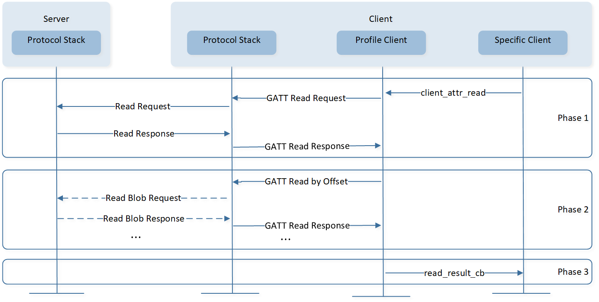
Read Characteristic Value by Handle
Read Characteristic Value by UUID
This sub-procedure is used to read a characteristic value from a server when the client only knows the characteristic UUID and does not know the handle of the characteristic. Reading characteristic value by UUID is a three-phase process. Phase 1 and phase 3 are always used. Phase 2 is optional (see Read Characteristic Value by UUID ):
Phase 1: Call
client_attr_read_using_uuid()to read characteristic value.Phase 2: Optional phase. If the characteristic value is greater than (
ATT_MTU-4) octets in length, the Read by Type Response only contains the first portion of the characteristic value and the Read Long Characteristic Value procedure will be used.Phase 3: Profile client layer calls
read_result_cb()to return read result.
The interaction between each layer is shown in Figure-Read Characteristic Value by UUID.
{kind=link}
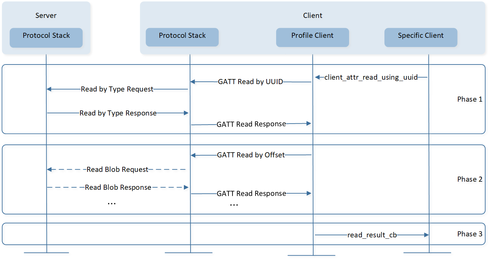
Read Characteristic Value by UUID
Characteristic Value Write
This procedure is used to write a characteristic value to a server. There are four sub-procedures in the profile client layer that can be used to write a characteristic value: Write without Response, Signed Write without Response, Write Characteristic Value, and Write Long Characteristic Values.
Write Characteristic Value
This sub-procedure is used to write a characteristic value to a server when the client knows the characteristic value handle. When the length of value is less than or equal to (ATT_MTU-3) octets, the procedure will be used. Otherwise, the Write Long Characteristic Values sub-procedure will be used instead.
The interaction between each layer is shown in Figure-Write Characteristic Value.
{kind=link}
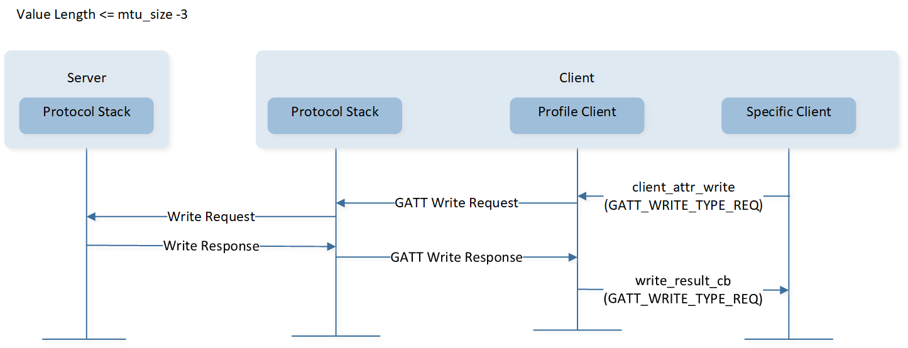
Write Characteristic Value
Write Long Characteristic Values
This sub-procedure is used to write a characteristic value to a server when the client knows the characteristic value handle and the length of the value is greater than (ATT_MTU-3) octets.
The interaction between each layer is shown in Figure-Write Long Characteristic Value.
{kind=link}
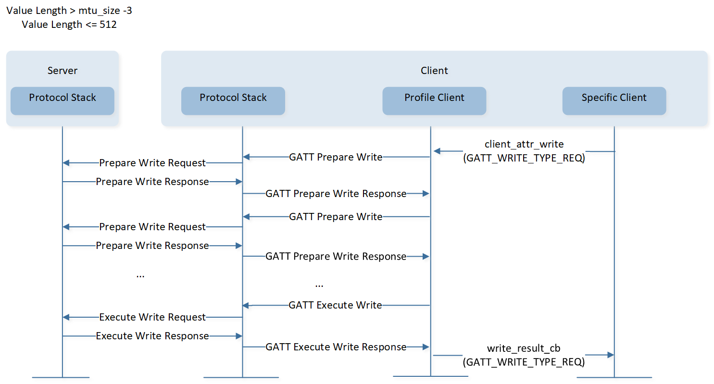
Write Long Characteristic Value
Write Without Response
This sub-procedure is used to write a characteristic value to a server when the client knows the characteristic value handle and the client does not need an acknowledgment that the write operation was successfully performed. The length of the value is less than or equal to (ATT_MTU-3) octets.
The interaction between each layer is shown as below:
{kind=link}
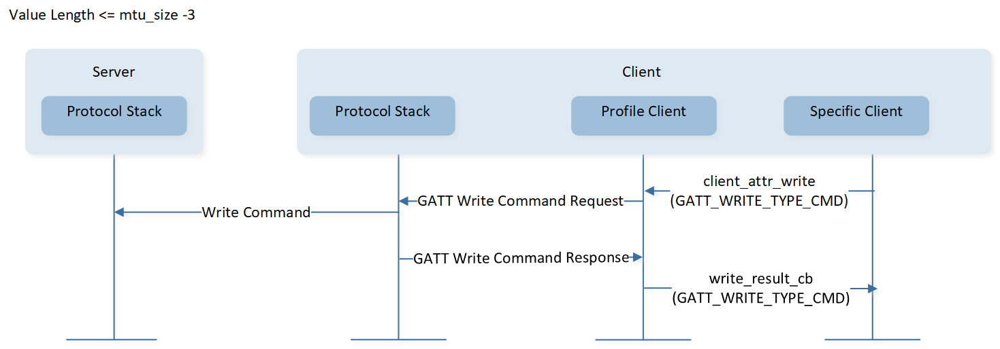
Write without Response
Signed Write without Response
This sub-procedure is used to write a characteristic value to a server when the client knows the characteristic value handle and the ATT Bearer is not encrypted. This sub-procedure shall only be used if the Characteristic Properties authenticated bit is enabled and the client and server device are bonded. The length of the value is less than or equal to (ATT_MTU-15) octets.
The interaction between each layer is shown below:

Signed Write without Response
Characteristic Value Notification
This procedure is used when a server is configured to notify a characteristic value to a client without expecting any Attribute Protocol layer acknowledgment that the notification was successfully received.
The interaction between each layer is shown below:
{kind=link}
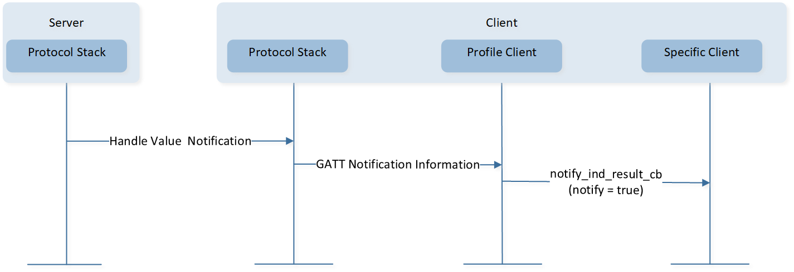
Characteristic Value Notification
Because the profile client layer does not store the service handle information, the profile client layer is not sure which specific client it is sent to. So, the profile client layer will call all registered specific clients. The specific client needs to check whether the notification is sent to itself.
Sample code is shown below:
static T_APP_RESULT bas_client_notify_ind_cb(uint8_t conn_id, bool notify, uint16_t handle,
uint16_t value_size, uint8_t *p_value)
{
T_APP_RESULT app_result = APP_RESULT_SUCCESS;
T_BAS_CLIENT_CB_DATA cb_data;
uint16_t *hdl_cache;
hdl_cache = bas_table[conn_id].hdl_cache;
cb_data.cb_type = BAS_CLIENT_CB_TYPE_NOTIF_IND_RESULT;
if (handle == hdl_cache[HDL_BAS_BATTERY_LEVEL])
{
cb_data.cb_content.notify_data.battery_level = *p_value;
}
else
{
return APP_RESULT_SUCCESS;
}
if (bas_client_cb)
{
app_result = (*bas_client_cb)(bas_client, conn_id, &cb_data);
}
return app_result;
}
Characteristic Value Indication
This procedure is used when a server is configured to indicate a characteristic value to a client and expects an Attribute Protocol layer acknowledgment that the indication was successfully received.
Characteristic Value Indication Without Result Pending
Callback function
notify_ind_result_cbreturn result is notAPP_RESULT_PENDING. The interaction between each layer is shown in Figure-Characteristic Value Indication without Result Pending.
Characteristic Value Indication without Result Pending
Characteristic Value Indication With Result Pending
Callback function
notify_ind_result_cbreturn result isAPP_RESULT_PENDING. APP needs to callclient_attr_ind_confirm()to send confirmation.The interaction between each layer is shown in Figure-Characteristic Value Indication with Result Pending.
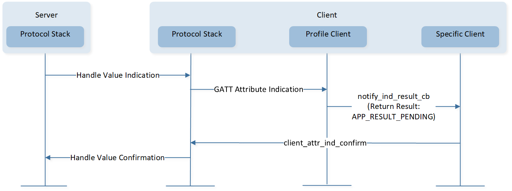
Characteristic Value Indication with Result Pending
Profile client layer does not store the service handle information, so the profile client layer is not sure to which specific client the notification should be sent. Therefore, the profile client layer will call all registered specific clients' callback functions. The specific client needs to check whether the indication is sent to itself. Sample code is shown below:
static T_APP_RESULT simp_ble_client_notif_ind_result_cb(uint8_t conn_id, bool notify, uint16_t handle, uint16_t value_size, uint8_t *p_value) { T_APP_RESULT app_result = APP_RESULT_SUCCESS; T_SIMP_CLIENT_CB_DATA cb_data; uint16_t *hdl_cache; hdl_cache = simp_table[conn_id].hdl_cache; cb_data.cb_type = SIMP_CLIENT_CB_TYPE_NOTIF_IND_RESULT; if (handle == hdl_cache[HDL_SIMBLE_V3_NOTIFY]) { cb_data.cb_content.notif_ind_data.type = SIMP_V3_NOTIFY; cb_data.cb_content.notif_ind_data.data.value_size = value_size; cb_data.cb_content.notif_ind_data.data.p_value = p_value; } else if (handle == hdl_cache[HDL_SIMBLE_V4_INDICATE]) { cb_data.cb_content.notif_ind_data.type = SIMP_V4_INDICATE; cb_data.cb_content.notif_ind_data.data.value_size = value_size; cb_data.cb_content.notif_ind_data.data.p_value = p_value; } else { return app_result; } /* Inform APP the notif/ind result. */ if (simp_client_cb) { app_result = (*simp_client_cb)(simp_client, conn_id, &cb_data); } return app_result; }
{kind=link}
Sequential Protocol
Request-response Protocol
Many attribute protocol PDUs use a sequential request-response protocol. Once a client sends a request to a server, that client will send no other request to the same server until a response PDU has been received. Indications sent from a server also use a sequential indication-confirmation protocol. No other indications shall be sent to the same client from this server on the same ATT bearer until a confirmation PDU has been received. The client, however, is free to send commands and requests prior to sending a confirmation.
The following procedures are sequential request-response protocols:
Discovery Procedure
Read Characteristic Value By Handle
Read Characteristic Value By UUID
Write Characteristic Value
Write Long Characteristic Values
APP can't start other procedures before the current procedure is completed. Otherwise, the other procedure will fail to start.
The Bluetooth Host may send an exchange MTU request after the connection is successfully established. The GAP layer will send a message GAP_MSG_LE_CONN_MTU_INFO to inform APP that the exchange MTU procedure has been completed. So, APP can start procedures listed above after receiving GAP_MSG_LE_CONN_MTU_INFO.
void app_handle_conn_mtu_info_evt(uint8_t conn_id, uint16_t mtu_size)
{
APP_PRINT_INFO2("app_handle_conn_mtu_info_evt: conn_id %d, mtu_size %d", conn_id, mtu_size);
app_discov_services(conn_id, true);
}
Commands
Commands that do not require a response do not have any flow control in ATT Layer.
Write Without Response
Signed Write Without Response
Because of limited resources, the Bluetooth Host uses flow control to manage commands.
Flow control for Write Command and Signed Write Command is implemented with a credits value maintained in the GAP layer, which allows the APP to send commands in a number of credits without waiting for a response from the Bluetooth Host. The Bluetooth Host can cache commands in a number of credits.
The credit count decreases by one when the profile client layer sends a command to the Bluetooth Host.
The credit count increases by one when the profile client layer receives the response from the Bluetooth Host. When the command is sent to air, the Bluetooth Host will send a response to the profile client layer.
A command shall only be sent when the credit count is greater than zero.
The callback function write_result_cb can inform the current credit. Or APP can also call le_get_gap_param() to get GAP_PARAM_LE_REMAIN_CREDITS.
void test(void)
{
uint8_t wds_credits;
le_get_gap_param(GAP_PARAM_LE_REMAIN_CREDITS, &wds_credits);
}
Use Cases
LE GAP Use Case
This chapter is used to show how to use the LE GAP interfaces. Here are some typical use cases.
Local IRK Setting
IRK is a 128-bit key used to generate and resolve random addresses. Default local IRK is all-zero.
If a device supports the generation of resolvable private addresses and generates a resolvable private address for its local address, it shall send Identity Information with the SMP, including a valid IRK.
If a device does not generate a resolvable private address for its own address and the Host sends Identity Information with the SMP, the Host shall send an all-zero IRK. Under such circumstances, the local device does not use a resolvable private address, and APP need not set the local IRK.
GAP layer provides two methods to set Local IRK:
Auto generated local IRK
If APP wants to enable this function, it needs to set
GAP_PARAM_BOND_GEN_LOCAL_IRK_AUTOtotrue. When the GAP layer starts up, the GAP layer will callflash_load_local_irk()to load local IRK. If the GAP layer fails to load the local IRK, the GAP layer will auto generate local IRK and callflash_save_local_irk()to save local IRK. So when this function is enabled, APP can't useflash_load_local_irk()andflash_save_local_irk().void app_le_gap_init(void) { ...... uint8_t irk_auto = true; le_bond_set_param(GAP_PARAM_BOND_GEN_LOCAL_IRK_AUTO, sizeof(uint8_t), &irk_auto); }
APP generates local IRK
GAP layer uses this method by default and default value is all-zero. APP can call
le_bond_set_param()to setGAP_PARAM_BOND_SET_LOCAL_IRKto change local IRK.void app_le_gap_init(void) { ...... T_LOCAL_IRK le_local_irk = {0, 1, 0, 5, 0, 0, 7, 0, 0, 0, 0, 0, 0, 0, 0, 9}; le_bond_set_param(GAP_PARAM_BOND_SET_LOCAL_IRK, GAP_KEY_LEN, le_local_irk.local_irk); }
This parameter is only valid in the GAP layer startup process. So APP needs to set
GAP_PARAM_BOND_SET_LOCAL_IRKbefore callinggap_start_bt_stack().APP can generate local IRK and call
flash_save_local_irk()to save the IRK. Then APP can useflash_load_local_irk()to load local IRK and setGAP_PARAM_BOND_SET_LOCAL_IRKto change local IRK.
GAP Service Characteristic Writable
Sample code in LE Scatternet project.
Device name characteristic and device appearance characteristic of GAP service have an optional writable property. The writable property is closed by default. APP can call gaps_set_parameter() to set GAPS_PARAM_APPEARANCE_PROPERTY and GAPS_PARAM_DEVICE_NAME_PROPERTY to configure writable property.
Writable Property Configuration
void app_le_gap_init(void) { uint8_t appearance_prop = GAPS_PROPERTY_WRITE_ENABLE; uint8_t device_name_prop = GAPS_PROPERTY_WRITE_ENABLE; T_LOCAL_APPEARANCE appearance_local; T_LOCAL_NAME local_device_name; if (flash_load_local_appearance(&appearance_local) == 0) { gaps_set_parameter(GAPS_PARAM_APPEARANCE, sizeof(uint16_t), &appearance_local.local_appearance); } if (flash_load_local_name(&local_device_name) == 0) { gaps_set_parameter(GAPS_PARAM_DEVICE_NAME, GAP_DEVICE_NAME_LEN, local_device_name.local_name); } gaps_set_parameter(GAPS_PARAM_APPEARANCE_PROPERTY, sizeof(appearance_prop), &appearance_prop); gaps_set_parameter(GAPS_PARAM_DEVICE_NAME_PROPERTY, sizeof(device_name_prop), &device_name_prop); gatt_register_callback(gap_service_callback); }
GAP Service Callback Handler
APP needs to invoke
gatt_register_callback()to register callback function. This callback function is used to handle GAP service messages.T_APP_RESULT gap_service_callback(T_SERVER_ID service_id, void *p_para) { T_APP_RESULT result = APP_RESULT_SUCCESS; T_GAPS_CALLBACK_DATA *p_gap_data = (T_GAPS_CALLBACK_DATA *)p_para; APP_PRINT_INFO2("gap_service_callback conn_id = %d msg_type = %d\n", p_gap_data->conn_id, p_gap_data->msg_type); if (p_gap_data->msg_type == SERVICE_CALLBACK_TYPE_WRITE_CHAR_VALUE) { switch (p_gap_data->msg_data.opcode) { case GAPS_WRITE_DEVICE_NAME: { T_LOCAL_NAME device_name; memcpy(device_name.local_name, p_gap_data->msg_data.p_value, p_gap_data->msg_data.len); device_name.local_name[p_gap_data->msg_data.len] = 0; flash_save_local_name(&device_name); } break; case GAPS_WRITE_APPEARANCE: { uint16_t appearance_val; T_LOCAL_APPEARANCE appearance; LE_ARRAY_TO_UINT16(appearance_val, p_gap_data->msg_data.p_value); appearance.local_appearance = appearance_val; flash_save_local_appearance(&appearance); } break; default: break; } } return result; }
APP needs to save device name and device appearance to Flash. Please refer to chapter Local Bluetooth Host Information Storage.
Local Static Random Address
The sample code is located in LE Scatternet project.
Local address type that is used in advertising, scanning and connection is public address by default, and local address type could be configured as static random address.
Generation and storage of Random Address
APP may call
le_gen_rand_addr()to generate a random address for the first time, and save generated random address to Flash. If the random address has been saved in Flash, APP gets the random address by loading from storage. Then APP callsle_set_gap_param()withGAP_PARAM_RANDOM_ADDRto set the random address. It is valid only when APP calledle_set_gap_param()withGAP_PARAM_RANDOM_ADDRbefore stack ready, andle_set_rand_addr()should be called after stack ready.Set Identity Address
Stack uses public address as identity address by default. APP needs to call
le_cfg_local_identity_address()to modify identity address to static random address. If configuration of identity address is incorrect, reconnection can not be implemented after pairing.Set local address type
Peripheral role or Broadcaster role call
le_adv_set_param()to configure local address type to use static random address. Central role or Observer role callle_scan_set_param()to configure local address type to use static random address. Sample code is listed as below.void app_le_gap_init(void) { ...... T_APP_STATIC_RANDOM_ADDR random_addr; bool gen_addr = true; uint8_t local_bd_type = GAP_LOCAL_ADDR_LE_RANDOM; if (app_load_static_random_address(&random_addr) == 0) { if (random_addr.is_exist == true) { gen_addr = false; } } if (gen_addr) { if (le_gen_rand_addr(GAP_RAND_ADDR_STATIC, random_addr.bd_addr) == GAP_CAUSE_SUCCESS) { random_addr.is_exist = true; app_save_static_random_address(&random_addr); } } le_cfg_local_identity_address(random_addr.bd_addr, GAP_IDENT_ADDR_RAND); le_set_gap_param(GAP_PARAM_RANDOM_ADDR, 6, random_addr.bd_addr); //only for Peripheral,Broadcaster le_adv_set_param(GAP_PARAM_ADV_LOCAL_ADDR_TYPE, sizeof(local_bd_type), &local_bd_type); //only for Central,Observer le_scan_set_param(GAP_PARAM_SCAN_LOCAL_ADDR_TYPE, sizeof(local_bd_type), &local_bd_type); ...... }
Central calls
le_connect()function to configure the local address type to use static random address. Sample code is listed as below:static T_USER_CMD_PARSE_RESULT cmd_con(T_USER_CMD_PARSED_VALUE *p_parse_value) { ...... #if F_BT_LE_USE_STATIC_RANDOM_ADDR T_GAP_LOCAL_ADDR_TYPE local_addr_type = GAP_LOCAL_ADDR_LE_RANDOM; #else T_GAP_LOCAL_ADDR_TYPE local_addr_type = GAP_LOCAL_ADDR_LE_PUBLIC; #endif ...... cause = le_connect(GAP_PHYS_CONN_INIT_1M_BIT, addr, (T_GAP_REMOTE_ADDR_TYPE)addr_type, local_addr_type, 1000); ...... }
Physical (PHY) Setting
The sample code is located in LE Scatternet project.
LE mandatory symbol rate is 1 mega symbol per second (Msym/s), where 1 symbol represents 1 bit; Therefore supporting a bit rate of 1 megabit per second (Mb/s), which is referred to as the LE 1M PHY. The 1 Msym/s symbol rate may optionally support error correction coding, which is referred to as the LE Coded PHY.
This may use either of two coding schemes: S=2, where 2 symbols represent 1 bit; Therefore supporting a bit rate of 500 kb/s, and S=8, where 8 symbols represent 1 bit; Therefore supporting a bit rate of 125 kb/s. An optional symbol rate of 2 Msym/s may be supported, with a bit rate of 2 Mb/s, which is referred to as the LE 2M PHY. The 2 Msym/s symbol rate supports uncoded data only. LE 1M PHY and LE 2M PHY are collectively referred to as the LE Uncoded PHYs [1].
Set Default PHY
APP can specify its preferred values for the transmitter PHY and receiver PHY to be used for all subsequent connections over the LE transport.
void app_le_gap_init(void) { uint8_t phys_prefer = GAP_PHYS_PREFER_ALL; uint8_t tx_phys_prefer = GAP_PHYS_PREFER_1M_BIT | GAP_PHYS_PREFER_2M_BIT; uint8_t rx_phys_prefer = GAP_PHYS_PREFER_1M_BIT | GAP_PHYS_PREFER_2M_BIT; le_set_gap_param(GAP_PARAM_DEFAULT_PHYS_PREFER, sizeof(phys_prefer), &phys_prefer); le_set_gap_param(GAP_PARAM_DEFAULT_TX_PHYS_PREFER, sizeof(tx_phys_prefer), &tx_phys_prefer); le_set_gap_param(GAP_PARAM_DEFAULT_RX_PHYS_PREFER, sizeof(rx_phys_prefer), &rx_phys_prefer); }
Read connection PHY type
After establishing connection successfully, APP can call
le_get_conn_param()to get TX PHY and RX PHY type.Remote Features Info Check
After establishing connection successfully, Bluetooth Host will read remote features. GAP Layer will send
GAP_MSG_LE_REMOTE_FEATS_INFOto inform remote features. APP can check whether the remote device supportsLE 2M PHYorLE Coded PHY.T_APP_RESULT app_gap_callback(uint8_t cb_type, void *p_cb_data) { T_APP_RESULT result = APP_RESULT_SUCCESS; T_LE_CB_DATA *p_data = (T_LE_CB_DATA *)p_cb_data; switch (cb_type) { #if F_BT_LE_5_0_SET_PHY_SUPPORT case GAP_MSG_LE_REMOTE_FEATS_INFO: { uint8_t remote_feats[8]; APP_PRINT_INFO3("GAP_MSG_LE_REMOTE_FEATS_INFO: conn_id %d, cause 0x%x, remote_feats %b", p_data->p_le_remote_feats_info->conn_id, p_data->p_le_remote_feats_info->cause, TRACE_BINARY(8, p_data->p_le_remote_feats_info->remote_feats)); if (p_data->p_le_remote_feats_info->cause == GAP_SUCCESS) { memcpy(remote_feats, p_data->p_le_remote_feats_info->remote_feats, 8); if (remote_feats[LE_SUPPORT_FEATURES_MASK_ARRAY_INDEX1] & LE_SUPPORT_FEATURES_LE_2M_MASK_BIT) { APP_PRINT_INFO0("GAP_MSG_LE_REMOTE_FEATS_INFO: support 2M"); } if (remote_feats[LE_SUPPORT_FEATURES_MASK_ARRAY_INDEX1] & LE_SUPPORT_FEATURES_LE_CODED_PHY_MASK_BIT) { APP_PRINT_INFO0("GAP_MSG_LE_REMOTE_FEATS_INFO: support CODED"); } } } break; #endif } }
Set PHY
le_set_phy()is used to set the PHY preferences for the connection identified byconn_id. The Controller might not be able to make the change (e.g. because the peer device does not support the requested PHY) or may decide that the current PHY is preferable.static T_USER_CMD_PARSE_RESULT cmd_setphy(T_USER_CMD_PARSED_VALUE *p_parse_value) { uint8_t conn_id = p_parse_value->dw_param[0]; uint8_t all_phys; uint8_t tx_phys; uint8_t rx_phys; T_GAP_PHYS_OPTIONS phy_options = GAP_PHYS_OPTIONS_CODED_PREFER_S8; T_GAP_CAUSE cause; if (p_parse_value->dw_param[1] == 0) { all_phys = GAP_PHYS_PREFER_ALL; tx_phys = GAP_PHYS_PREFER_1M_BIT; rx_phys = GAP_PHYS_PREFER_1M_BIT; } else if (p_parse_value->dw_param[1] == 1) { all_phys = GAP_PHYS_PREFER_ALL; tx_phys = GAP_PHYS_PREFER_2M_BIT; rx_phys = GAP_PHYS_PREFER_2M_BIT; } ...... cause = le_set_phy(conn_id, all_phys, tx_phys, rx_phys, phy_options); return (T_USER_CMD_PARSE_RESULT)cause; }
PHY Update
GAP_MSG_LE_PHY_UPDATE_INFOis used to inform result of updating transmitter PHY or receiver PHY used by the Controller.T_APP_RESULT app_gap_callback(uint8_t cb_type, void *p_cb_data) { T_APP_RESULT result = APP_RESULT_SUCCESS; T_LE_CB_DATA *p_data = (T_LE_CB_DATA *)p_cb_data; switch (cb_type) { #if F_BT_LE_5_0_SET_PHY_SUPPORT case GAP_MSG_LE_PHY_UPDATE_INFO: APP_PRINT_INFO4("GAP_MSG_LE_PHY_UPDATE_INFO:conn_id %d, cause 0x%x, rx_phy %d, tx_phy %d", p_data->p_le_phy_update_info->conn_id, p_data->p_le_phy_update_info->cause, p_data->p_le_phy_update_info->rx_phy, p_data->p_le_phy_update_info->tx_phy); break; #endif } }
Features Setting
Configuration of Bluetooth related features are divided into configuration of LE Link number and parameter configuration with API.
The sample code is located in LE Scatternet.
Parameter Configuration with API
APP can use APIs which are defined in gap_config.h to configure Bluetooth stack related features, such as the LE maximum bonded device number, maximum CCCD number. APP shall follow the configuration method to use the APIs.
Add macro definition in
otp_config.h#define BT_STACK_CONFIG_ENABLE #ifdef BT_STACK_CONFIG_ENABLE void bt_stack_config_init(void); #endif
Configure Bluetooth features in
main.cThe default value of the LE maximum bonded device number is 1. Due to supporting multi-link, APP uses
gap_config_max_le_paired_device()to configure LE maximum bonded device number....... #include <gap_config.h> #include <otp_config.h> ...... #ifdef BT_STACK_CONFIG_ENABLE #include "app_section.h" APP_FLASH_TEXT_SECTION void bt_stack_config_init(void) { gap_config_max_le_paired_device(APP_MAX_LINKS); } #endif
Request Pairing
iOS system doesn't supply the interface to initiate security procedure. If the Peripheral device wants to pair with a iOS device, the Peripheral device needs to request pairing.
The way to initiate the security procedure, and the way for the local device with GATT Server to request the iOS device to initiate the security procedure are shown as following:
Call Function le_bond_pair
APP can call le_bond_pair() to initiate the security procedure. The le_bond_pair() function can only be called after LE link state is GAP_CONN_STATE_CONNECTED.
void app_handle_conn_state_evt(uint8_t conn_id, T_GAP_CONN_STATE new_state, uint16_t disc_cause)
{
......
switch (new_state)
{
......
case GAP_CONN_STATE_CONNECTED:
{
le_bond_pair(conn_id);
}
break;
default:
break;
}
}
Security Requirement of Service
The GATT Profile procedures are used to access information that may require the client to be authenticated and have an encrypted connection before a characteristic can be read or written.
If such a request is issued when the physical link is unauthenticated or unencrypted, the server shall send an Error Response. The client wanting to read or write this characteristic can then request that the physical link be authenticated using the GAP authentication procedure, and once this has been completed, it sends the request again.
The sample is shown in ATT Insufficient Authentication. When the iOS system receives the unauthenticated or unencrypted error response, the iOS system will initiate the security procedure.
{kind=link}
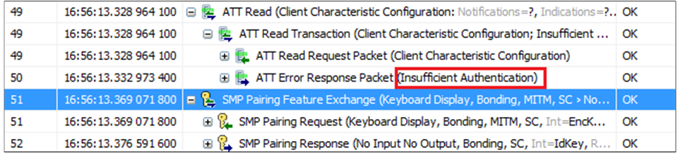
ATT Insufficient Authentication
Attribute element is the elementary unit of service. The structure of attribute element is defined in gatt.h.
typedef struct
{
uint16_t flags; /**< Attribute flags @ref GATT_ATTRIBUTE_FLAG */
uint8_t type_value[2 + 14]; /**< 16 bit UUID + included value or 128 bit UUID */
uint16_t value_len; /**< Length of value */
void *p_value_context; /**< Pointer to value if @ref ATTRIB_FLAG_VALUE_INCL
and @ref ATTRIB_FLAG_VALUE_APPL not set */
uint32_t permissions; /**< Attribute permission @ref GATT_ATTRIBUTE_PERMISSIONS */
} T_ATTRIB_APPL;
The parameter permissions are used to define the permissions of the attribute. For more information, please refer to Attribute Element.
Here is the sample code demonstrating the authentication requirement for this characteristic. This characteristic requires an authenticated link before it can be read and written.
/* client characteristic configuration 27*/
{
(ATTRIB_FLAG_VALUE_INCL | /* wFlags */
ATTRIB_FLAG_CCCD_APPL),
{ /* bTypeValue */
LO_WORD(GATT_UUID_CHAR_CLIENT_CONFIG),
HI_WORD(GATT_UUID_CHAR_CLIENT_CONFIG),
/* NOTE: this value has an instantiation for each client, a write to */
/* this attribute does not modify this default value: */
LO_WORD(GATT_CLIENT_CHAR_CONFIG_DEFAULT), /* client char. config. bit field */
HI_WORD(GATT_CLIENT_CHAR_CONFIG_DEFAULT)
},
2, /* bValueLen */
NULL,
(GATT_PERM_READ_AUTHEN_REQ | GATT_PERM_WRITE_AUTHEN_REQ) /* wPermissions */
}
GATT Profile Use Case
This chapter is used to show how to use GATT profile interfaces. Here are some typical use cases.
ANCS Client
The sample code is located in LE Peripheral. Please refer to the chapter ANCS Client in LE Peripheral.
Trouble Shooting
Caution
The APIs do not support multiple threads. Therefore, operations involving calling the APIs and handling messages must be executed in the same task.
The APIs provided in the SDK can be classified into synchronous APIs and asynchronous APIs. The result of a synchronous API is indicated by a return value,
such as le_adv_set_param(). If the return value of le_adv_set_param() is GAP_CAUSE_SUCCESS, it means that the APP has successfully set a GAP advertising parameter.
The result of an asynchronous API is notified through a GAP message, such as le_adv_start(). If the return value of le_adv_start() is GAP_CAUSE_SUCCESS,
it means that the request to start advertising has been successfully sent. The result of starting advertising is notified by a GAP message, specifically the GAP_MSG_LE_DEV_STATE_CHANGE message.
Sample Projects
There are four GAP roles defined for devices operating over an LE physical transport. SDK provides corresponding demo applications for reference during development.
Broadcaster
Send advertising events.
Cannot create connections.
Demo application: LE Broadcaster.
Observer
Scan for advertising events.
Cannot initiate connections.
Demo application: LE Observer.
Peripheral
Send advertising events.
Can accept the establishment of LE link and become a Peripheral role in the link.
Demo application: LE Peripheral.
Central
Scan for advertising events.
Can initiate connection and become a Central role in the link.
Demo application: LE Central.
Multiple-role
Peripheral + Central.
Demo application: LE Scatternet.
Peripheral + LE Advertising Extensions
Send advertising events with LE Advertising Extensions.
Enable one or more advertising sets at a time.
Enable advertising set for a duration or maximum number of extended advertising events.
Transmit more data with extended advertising PDUs(Observer or Central support LE Advertising Extensions).
Can accept the establishment of LE link and become a Peripheral role in the link on LE 1M PHY, LE 2M PHY or LE Coded PHY.
Demo application: LE Peripheral Extended ADV.
Central + LE Advertising Extensions
Extended scan for advertising packets on the primary advertising channel (LE 1M PHY or/and LE Coded PHY).
Scan for a duration; periodic scan.
Can initiate connection and become a Central role in the link on LE 1M PHY, LE 2M PHY or LE Coded PHY.
Demo application: LE Central Extended Scan.
Peripheral + Privacy
Send advertising events.
Can accept the establishment of LE link and become a Peripheral role in the link.
Can use Filter Accept List when remote device uses resolvable private address.
Demo application: LE Peripheral Privacy.
References
Bluetooth SIG. Core_v5.4 [M]. 2023, 190.
See Also
Please refer to the relevant API Reference: